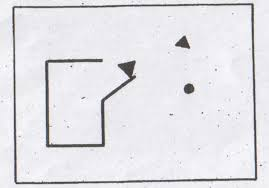

Le lien qui existe entre scènes et machines
remonte bien avant l’apparition de la lumière électrique ou des diverses
mutations technologiques que l’on peut connaître aujourd’hui
11. Mélanie Traversier, « Techniques et techniciens du spectaculaire, XVe–XVIIIe siècles », Revue d’Histoire du Théâtre numéro 278 [en ligne]. Consulté le 29 janvier 2025, à https://sht.asso.fr/techniques-et-techniciens-du-spectaculaire-xve-xviiie-siecles/
. On trouve des traces d’utilisations de machines spécifiques au théâtre
durant toutes les époques en commençant avec l’Antiquité où le mot
machine trouve ses origines.
Dérivé du grec ancien mêkhanê, transmis par le latin
mechanica, le terme désignait alors divers dispositifs servant
à accomplir des tâches techniques : constructions d'ouvrages, extractions
de minerais ou encore machines de guerre. Mais au-delà de ces usages
pratiques, la mêkhanê jouait également un rôle particulier dans le
théâtre de la Grèce Antique
22. Edmond Couchot, Automates, Robots et Humains Virtuels dans les arts vivants, Presses Universitaires de Vincennes ; Collection : Théâtres du monde, 2022, p. 15
. Elle désignait une grue en bois
encastrée dans le sol, composée d’un mât vertical équipé de treuils et
de poulies. Ce dispositif permettait de mettre en scène des apparitions
divines, donnant naissance au célèbre procédé dramatique connu sous le
nom Deus Ex Machina33. L’expression Deus ex machina (littéralement « Dieu descendu à l’aide d’une machine », ou plus simplement « dieu issu de la machine ») désigne un procédé théâtral où un personnage divin apparaît de manière totalement inattendue grâce à un artifice mécanique, permettant ainsi de résoudre une situation inextricable et d’amener le dénouement de la pièce.
, particulièrement employé dans les
tragédies grecques.
Durant le Moyen Âge, on peut aussi observer l’existence de machines
employées durant les représentations religieuses de l’époque ; les
mystères. Ceux-ci intégraient des dispositifs, alors non pas
appelés machines mais feintes ou secrets44. Véronique Dominguez, « Les machines du théâtre français : de la technique à l’illusion (XIVe-XVIIe s.) ». Engins et machines, édité par Fabienne Pomel, Presses universitaires de Rennes, 2015. Consulté le 30 janvier 2025 à https://doi.org/10.4000/books.pur.55659
.
Ces dénominations englobaient les décors, accessoires et autres engins
qui permettaient des apparitions ou disparitions spectaculaires, souvent
associées à des figures religieuses.
L’héritage que constitue l’utilisation de ces secrets dans les
mystères du Moyen Âge se retrouvera ensuite repris notamment au
XVIIe siècle
55. Gaëlle Lafarge, « Le théâtre et les machines », BnF les essentiels, 2022. Consulté le 29 janvier 2025 à https://essentiels.bnf.fr/fr/article/23c1f2a4-685c-4b41-9754-213fcd262305-theatre-et-les-machines
, période à laquelle on attribue la création de la
machinerie de théâtre telle qu’on peut la connaître aujourd’hui malgré
ses différentes évolutions. Ce sont les innovations italiennes, portées
par des architectes tels que Sabbatini et Torelli, qui ont marqué un
tournant décisif. C’est à cette époque que les divers mécanismes de la
machinerie connaissent un grand développement ; trappes, levages,
dispositifs permettant de faire tomber des feuilles, simuler de la pluie
et bien d’autres sont créés et mis au service de l’imagination des
écrivains de l’époque.
En France, à la demande des rois et ministres, ces innovations vont
se répandre et se populariser grâce à des auteurs comme Pierre Corneille
ou Molière qui ont commencé à intégrer pleinement la machinerie à la
dramaturgie. Bien que certains critiques invoquent la règle de
vraisemblance
66. La règle de vraisemblance désigne le fait de rendre crédible aux yeux du public le déroulement et le contenu de la pièce. L’intrigue doit ainsi paraître rationnelle, crédible et « possible » dans la vie « réelle ». (voir Le Robert, Vraisemblance, consulté le 29 janvier 2025 à https://dictionnaire.lerobert.com/definition/vraisemblance).
pour rejeter ces excès techniques, le succès de ce que
l’on appelle alors pièces à machines77. On peut définir une pièce à machines comme une pièce où les machines jouent un rôle central et sont nécessaires, comme Andromède de Pierre Corneille, où il est précisé que les machines y étaient nécessaires. (voir Gaëlle Lafarge, « Le théâtre et les machines », BnF les essentiels, 2022. Consulté le 29 janvier 2025 à https://essentiels.bnf.fr/fr/article/23c1f2a4-685c-4b41-9754-213fcd262305-theatre-et-les-machines).
est tel que les
théâtres intègrent petit à petit les divers organes de la machinerie à
leur architecture, jusqu’à ce qu’elle fasse complètement corps avec
celle-ci à la fin du XVIIe siècle.
Après cela, et jusqu’à aujourd’hui, les créations scéniques n’auront
de cesse de s’appuyer sur cette tradition où technologie et art
s’influencent, s’enrichissent mutuellement et se questionnent.
Machinerie merveilleuse
88. Le terme merveilleux qualifie à la fois ce qui étonne par son caractère inexplicable, surnaturel, et ce qui est admirable, exceptionnel. Il est également utilisé pour désigner un registre littéraire, artistique et cinématographique caractérisé par la présence d’éléments ou de personnages fantastiques qui s’écartent de notre expérience ordinaire (voir Nicolas Nova, La persistance du merveilleux, le petit peuple de nos machines, éditions Premier Parallèle, 2024, p. 11).
« […] tous insistent sur le but qui doit être celui des machines de théâtre : l’émerveillement qu’il est question de susciter chez leur spectateur [...] »
99. Véronique Dominguez, « Les machines du théâtre français : de la technique à l’illusion (XIVe-XVIIe s.) ». Engins et machines, édité par Fabienne Pomel, Presses universitaires de Rennes, 2015. Consulté le 30 janvier 2025 à https://doi.org/10.4000/books.pur.55659
Véronique Dominguez
Entre manèges à chérubins
1010. « Le manège de chérubins accrochés à un cercle métallique est en effet un classique des machineries théâtrales italiennes renaissantes. » Marie Bouhaïk-Girones, « Merveilleux et surnaturel sur les scènes théâtrales (XVe-XVIe siècles) », Encyclopédie d'histoire numérique de l'Europe [en ligne], 2020. Consulté le 17/12/2024 à https://ehne.fr/fr/node/12394
, incarnations de figures fantomatiques
et autres effets spectaculaires : les machines du théâtre sont teintées
d’une symbolique merveilleuse. Dès l’origine, elles sont conçues non pas
à des fins utilitaires mais plutôt pour émerveiller et stimuler
l’imagination
1111. Edmond Couchot, Automates, Robots et Humains Virtuels dans les arts vivants, Presses Universitaires de Vincennes ; Collection : Théâtres du monde, 2022, p. 15
; elles enchantent les spectateur..ices par la
représentation de phénomènes extraordinaires, mais aussi par la
virtuosité de leurs effets.
Le registre du merveilleux se retrouve bien souvent dans l’univers de
la scène ; sous la forme d’apparitions divines mais aussi de personnages
fantastiques comme Méphistophélès
1212. Méphistophélès est un démon qui apparaît dans Faust, une œuvre en deux parties de Johann Wolfgang von Goethe.
, Puck et Obéron
1313. Puck (lutin) et Obéron (Roi des fées) sont tous deux des personnages qui apparaissent dans Le songe d’une nuit d’été de Shakespeare.
et bien d’autres.
Les machines du théâtre ont, avant toute chose, été utilisées pour
mettre en scène ces éléments surnaturels et sont ainsi chargées de
servir la représentation de ce merveilleux, dans le but d’émerveiller le
public et de renforcer sa crédulité.
De ce sentiment d’émerveillement, provoqué par les effets de la
machinerie, peut également naître d’autres éléments que ceux liés au
surnaturel : en touchant à tout ce qui surprend, fascine et impressionne
par sa beauté ou sa précision technique.
Ainsi, les machines, dans leur quête du merveilleux, tentent aussi de
représenter fidèlement des effets du réel
1414. Laplace-Claverie, H. « Montrer et dire le merveilleux sur les scènes françaises du XIXe siècle ». Romantisme, n° 170(4), 2015. Consulté le 29 janvier 2025 à https://doi.org/10.3917/rom.170.0076
afin de renforcer
l’immersion au sein de l’univers présenté aux spectateur..ices.
Encore une fois, dès l’Antiquité, des mécanismes comme le
brontéion1515. « Le Brontéion, plus connu sous le nom de « machine à tonnerre », désigne dans le théâtre antique grec, l’un des premiers dispositifs sonores utilisé à des fins dramaturgiques permettant d’imiter le bruit de la foudre. » (Sur le projet de Tanguy Clerc, Sur les traces du brontéion, 2016, https://philippelanglois.net/lcd/?tag=objet-sonore, consulté le 29 janvier 2025).
étaient mis en place pour créer des effets
sonores, dans ce cas-là : le bruit du tonnerre. Ces effets ne cesseront
de se développer : changements de décors plus rapides, jeux de lumière,
mécanismes sonores, tous prendront de plus en plus de place dans les
représentations dramatiques. Les machines de la scène n’ont de cesse de
chercher à repousser toujours plus les frontières du réel, de
représenter ou de nourrir les imaginaires.
Finalement, ces effets spectaculaires, qu’ils imitent le réel ou
qu’ils incarnent le surnaturel, ne sont que des illusions. Ils restent
des artifices créés par la machinerie, comme le suggère le terme de
feinte.
La scène repose sur un accord tacite mais consenti par le public.
Lorsque l’on va voir un spectacle, on accepte de croire ; de croire en
tout ce qui va nous être présenté. Qu’une plage soit symbolisée par le
bruit des vagues ou représentée par des tonnes de sable disséminées sur
la scène, même si l’on sait que tout est faux, nous acceptons de nous
immerger le temps de la représentation. La machine ne fait que renforcer
cette crédulité, en nous permettant de croire plus facilement, en
représentant le naturel comme le surnaturel.
L'invisibilisation de la machinerie
« Or, dans ce type de théâtre [le théâtre à l’italienne], le plus beau est soustrait au regard du spectateur : la machinerie dans les dessous et dans les cintres, les cabestans, treuils et tambours. [...] »
1616. François Delarozière, « Fabriquer des objets animés », Petit Traité de Scénographie, représentation du lieu/Lieu de représentation, textes choisis par Marcel Freydefont, Maison de la Culture de Loire-Atlantique, Éditions joca seria, 2007, p. 97
François Delarozière
Cette quête d’enchantement et d’immersion justifie que, bien souvent,
les machines s’effacent derrière les effets qu’elles produisent. Elles
sont fréquemment invisibilisées, cachées dans l’ombre ou dans les
coulisses. D’une part pour nourrir le sentiment d’émerveillement
souvent recherché, leur apportant ainsi un caractère magique, mais également
pour renforcer la crédulité du public. Ne pas savoir
d’où proviennent ces effets permet de renforcer l’illusion. La
qualification de celles-ci avec l’emploi du mot secrets au Moyen
Âge met en avant le fait que les machines de la scène reposent sur une
mise en œuvre cachée. L’incompréhension du fonctionnement permet de
laisser libre cours aux imaginaires
1717. Sur l’imaginaire enfantin et les connaissances techniques, voir le mémoire de DNSEP d'Arthur Van-Poucke, Infusion poético-industrielle, ESADSE, 2025, mention ACDC_espace.
. Lorsque l’on observe un effet
produit par un dispositif complexe sans en connaître la source, toutes
sortes d’explications magiques peuvent découler, mais si l’on en
comprend l'origine, alors l’enchantement est brisé.
Comme le souligne la citation de François Delarozière, cette tendance
à invisibiliser la machinerie se retrouve notamment dans le théâtre à
l’italienne
1818. Le théâtre à l’italienne désigne un style architectural apparu en Italie au XVIe siècle, qui a connu un grand succès en Europe aux XVIIIe et XIXe siècles. Ce type de théâtre repose sur des caractéristiques distinctives qui ont durablement influencé la conception des espaces scéniques. Parmi ses particularités, on note une séparation nette entre la scène et la salle, popularisant ainsi l'idée du "quatrième mur", cette barrière imaginaire entre les acteur..ices et le public. La salle est organisée de manière hiérarchique selon les classes sociales, avec des loges privées, des balcons, et un poulailler destiné aux spectateur..ices des rangs les plus modestes. La scène, surélevée par rapport au parterre, est inclinée vers le public afin de renforcer l'effet de perspective. Elle est surmontée d'une cage de scène qui abrite la machinerie. Wikipédia, article « Théâtre à l’italienne », consulté le 20 décembre 2024.
qui loge traditionnellement la machinerie dans la cage
de scène. Rideaux, habillages en frises et pendrillons sont utilisés
pour que les machines soient réellement absentes de la vision du public.
Les composantes de la machinerie sont également peintes en noir afin de
se dissimuler dans l’obscurité
1919. Théo Arnulf, « Pratiques technologiques émergentes dans le théâtre et l’installation », Appareil [En ligne], 21 | 2019. Consulté le 09 décembre 2024 à https://doi.org/10.4000/appareil.3093
.
Mais on peut aujourd’hui observer que cette tendance est de moins en
moins présente dans les spectacles. Les théâtres à l’italienne sont de
plus en plus contraignants pour les pratiques actuelles et sont bien
souvent rénovés ; on aplatit les plateaux, on les rabaisse et on enlève
la pente qui apportait un jeu de perspectives
2020. Sandrine Dubouilh, « Machines de théâtre et théâtres-machines des années 1960-1970 », In Situ [En ligne], 53 | 2024. Consulté le 20 décembre 2024 à https://doi.org/10.4000/122ph
. La modification des
architectures, d’une part, mais aussi les pratiques tendent à être plus
transparentes avec le public, laissant à vue les différents organes de
la machinerie ; l’heure n’est plus à la ruse. C'est le cas du spectacle
Mazut de la compagnie Baro d’evel (2012) qui laisse
tout son dispositif technique visible sur la scène – cordes, système
de gouttes simulant de la pluie, lumières. C’est même l’acteur présent
sur scène qui manipule les différentes cordes servant à lever et baisser
les éléments de la scène. Cette tendance avait déjà commencée au XIXe
siècle avec des metteurs en scène comme Erwin Piscator qui, avec ses
tapis roulants, scènes mobiles et vidéos, permettait aux coulisses
d’entrer dans le jeu théâtral
2121. Diaz, S., Ivernel, P., Kuntz, H., Lescot, D. et Moguilevskaïa, T. (2007). « Mettre en scène l’événement Tretiakov, Weiss, Brecht, Gatti, Vinaver, Paravidino, Jelinek… », Études théâtrales, N° 38-39(1), 82-93. Consulté le 29 janvier 2025 à https://doi.org/10.3917/etth.038.0082
.
Malgré cette monstration de la machinerie, celle-ci est rarement mise
au centre de la représentation, même dans les pièces où elle est
indispensable, comme les pièces à machines. La machinerie,
historiquement rattachée à la technique, est perçue de manière
utilitaire et reste cantonnée au statut d’outil ou d’accessoire. Ainsi,
tout objet technologique employé est rattaché à cette technique, aux
coulisses, et rend sa monstration controversée.
Ni machinerie, ni accessoire
Les machines que l’on souhaite observer
cherchent à s’émanciper de cette affiliation utilitaire et de ce rôle de
second plan. Elles se différencient ainsi des machines spécifiques à la
scène et cherchent encore leur statut. Non plus cantonnées à leurs
effets, on cherche des machines qui peuvent prendre place sur scène,
seules ou accompagnées. Sans se soucier de la technologie employée, ni
de son niveau technique – qu’elles soient pilotées, programmées, animées
ou non.
Elles s’apparentent ainsi davantage à ce que Thibault Sinay qualifie comme « objets techniques » dans son compte rendu de la table
ronde La machinerie : l’espace en mouvement11. Thibault Sinay, « La machinerie : l’espace en mouvement », Entretiens. 2023. Consulté le 24 janvier 2025 à https://theorem-a.org/2023/05/31/entretiens-la-machinerie-lespace-en-mouvement/
. Ces machines, empruntées au monde technique et au quotidien, sont parfois qualifiées
de « marionnettes augmentées » et ressemblent en effet en plusieurs
points à ces figures.
Finalement, nous souhaitons observer l’intégration sur scène de tous
types de machines définies par Edmond Couchot comme :
« Un dispositif plus ou moins complexe fabriqué par l’homme, capable de transformer de l’énergie pour réaliser une tâche ou un travail défini. [...] Cette énergie peut être extérieure à la machine (le vent, la lumière, une source de chaleur, la force de l’homme ou de l’animal…) [...] ».
22. Edmond Couchot, Automates, Robots et humains virtuels dans les arts vivants, Presses Universitaires de Vincennes, Collection Théâtres du monde, 2022, p.15
Edmond Couchot
Depuis la fabrication des premières machines, notre évolution
est conjointe à l’amélioration de celles-ci. Leur diversité
d’usages et leur quasi-omniprésence dans le monde d’aujourd’hui
ont considérablement étendu la définition du terme machine.
Elle englobe maintenant une vaste gamme d’objets plus ou moins
complexes dont le point commun reste systématiquement leur
capacité à se nourrir d’énergie pour accomplir une tâche spécifique.
Parmi celles-ci : les machines numériques, qui se distinguent par leur vocation unique à traiter de l’information
33. Ibid..
Ce qui dépendait avant des contraintes du réel, à la
manière d’une horloge nécessitant la descente d’un contrepoids
pour entraîner tous ses mécanismes, se retrouve maintenant
abstrait dans un environnement dont les règles diffèrent du nôtre.
Elles reposent désormais sur des données et parlent leur propre
langue. Mémoire, calcul, logique, sont tout autant de nouvelles
capacités permises par cet univers virtuel, les rendant programmables.
La présence des machines
Mais dès lors, s’ajoutant à leur affiliation
au domaine technique, un autre problème se pose concernant leur
intégration ; celui de leur présence. Ce qui agit sur le..a
spectateur..ice, qui fait qu’i..el se projette dans l’action, qu’i..el s’y
identifie. Il faut réussir à outrepasser la vision d’un simple objet,
pour arriver à l’identifier en tant que personnage qui peut nous
émouvoir. Comment se projeter dans des récits qui mettent en jeu des
corps mécanisés ? Comment les rendre porteurs de récits ? Comment
transmettre au travers de machines qui ne ressentent rien ?
La présence de l’acteur est une notion largement débattue. Elle n’a
pas de réelle définition, elle tient du ressenti, fait appel à la
sensibilité de chacun..e
44. Josette Féral, « La notion de présence », [en ligne]. Consulté le 29 janvier 2025 à https://effetsdepresence.uqam.ca/upload/files/articles/notion-de-presence.pdf
. C’est cette faculté à toucher les gens, à
attirer leur attention, à transcender la scène. Certain..es disent
qu'elle est innée, d’autres qu'elle se travaille. Pour beaucoup, cela
vient de l’humain, de l’organicité
55. Ibid. Par exemple, voir la citation de Martine Beaulne ou Irina Brook.
. Il y a quelque chose qui tient
de l’animé 66. Ibid. voir Lorraine Pintal.
. Imposer son rythme cardiaque, son rythme
respiratoire aux spectateur..ices
77. Ibid. voir Jacques Lassalle.
, une machine en est-elle capable ?
Ne pas tomber dans la prévisibilité, sous peine de perdre l’attention
des spectateur..ices, être capable de renouveler cette attention
88. Ibid. voir Dario Fo.
.
Tout cela peut sembler incompatible avec le concept de machine, et
pourrait finalement empêcher celle-ci d'y accéder. Mais durant mes
lectures, une citation a retenu mon attention qui laisse entrevoir une
possibilité :
« Je pense qu’on doit définir la présence d’une manière extrêmement pragmatique. Qu’est-ce que la présence? C’est ce qui agit sur le spectateur. À partir de là, on peut se demander s’il existe une technique qui permette à n’importe quel acteur d’agir sur les spectateurs; oui, sans doute. Là, il faut s’orienter sur les genres performatifs codifiés. Si l’on regarde par exemple un danseur classique, même s’il n’est pas une grande étoile, s’il n’est pas Noureïev, même au début de sa carrière, la manière dont il bouge, dont il se déplace sur scène va attirer notre attention beaucoup plus qu’une personne qui, sans technique, essaie juste d’y marcher. C’est une généralité bien sûr! Nous nous rendons compte alors que cette présence que le danseur a bâtie est une présence artificialisée. Nous nous rendons compte qu’il a bâti un corps artistique, c’est-à-dire artificiel, puisque art et artifice sont complémentaires. En même temps qu’il a bâti ce corps artificiel, il a reconstruit certaines lois fondamentales de l’organicité, de ce qui est vivant.
Toute la technique de la présence, toutes les bases sur la manière de recréer la vie sur scène de manière à toucher le système nerveux du spectateur – telles que les différentes traditions les ont condensées dans certains principes qui sont transculturels -, on peut les retrouver dans l’armature de n’importe quel genre ou style : le ballet classique, le mime, les différentes formes de théâtre parlé ou chanté. Derrière tous les choix esthétiques, il existe, identique pour tous les acteurs et les danseurs, le même problème : comment animer leurs mots et leur dynamique, comment les rendre vivants de manière à devenir crédibles. La crédibilité, c’est le mot fondamental. Comment faire en sorte que les spectateurs nous croient de manière qu’ils se laissent entraîner dans cette rivière de changements, de vibrations énergétiques qui constituent justement la vie – une espèce de rythme, de fluide -, de telle sorte qu’ils commencent à dépasser ce qui est la littéralité de ce qu’ils voient. Le spectateur voit des personnes qui sont habillées d’une certaine manière, qui parlent, il connaît leur nom. Mais les acteurs doivent dépasser cela, afin que le spectateur voit autre chose, une chose qui n’est pas seulement connaissance intellectuelle, mais qui est enracinée dans son système nerveux et fait appel à son énergie sensorielle, intellectuelle, physique, musculaire.
On peut donc bâtir la présence. C’est le niveau élémentaire, de base, du spectacle. Ensuite, il y aura encore d’autres niveaux à construire : relations, contextes, enchevêtrement dramaturgique. Ça dépendra soit du genre performatif – danse moderne ou théâtre à textes – soit du tempérament de chaque artiste. »
99. Ibid. Eugenio Barba.
Eugenio Barba
Jouer sur l'expression humaine
Oriza Hirata est un metteur en scène
japonais qui explore l’intégration des robots dans le théâtre. Il
travaille à l’université d’Osaka, où il collabore avec le professeur
Hiroshi Ishiguro, un chercheur en robotique. Sa démarche artistique
semble s’articuler autour d’un objectif central : provoquer des émotions
avec ses robots
11. Il le dit lui-même à propos de Moi, travailleur et de La métamorphose.
Pour Moi, travailleur voir : Oriza Hirata, Franck Bauchard et Marion Boudier, « Le théâtre et les robots », Agôn [En ligne], Points de vue, Entretiens. Consulté le 23 janvier 2025 à https://doi.org/10.4000/agon.1170
Pour La métamorphose voir : « La Métamorphose de Kafka au Japon: un robot au lieu d'un insecte » vidéo du média AFP. Visionnée le 23 janvier 2025 à https://www.youtube.com/watch?v=piczGaGI_es&t=92s
. Si chacune de ses créations développe une approche
singulière, certains procédés récurrents caractérisent son travail.
On peut les observer dès sa première pièce intégrant des robots,
Hataraku Watashi (Moi, travailleur), présentée pour la
première fois en 2008 à l’université d’Osaka. Cette pièce de vingt
minutes met en scène deux acteur..ices humain..es interagissant avec deux
robots ménagers Wakamaru
22. Les robots Wakamaru, qualifiés de « robots d’aide amicale », sont utilisés comme assistants domestiques, réceptionnistes de bureau, ou encore représentants des ventes. Ils sont capables de reconnaître des visages, de converser et de serrer des mains. Créés en 2003, ils sont fabriqués par Mitsubishi Heavy Industries. https://robotsguide.com/robots/wakamaru consulté le 23 janvier 2025.
. Ces robots ont une forme vaguement
humanoïde ; ils sont dotés d'une tête, avec un visage représenté dessus,
ainsi que de deux bras.
Pour que ceux-ci parviennent à provoquer des émotions, les
spectateur..ices doivent les percevoir autrement que comme de simples
machines dépourvues de sensibilité. Pour cela, il les humanise dès
l’intrigue, puis au travers d’autres procédés tout au long de la pièce.
Celle-ci présente un homme incapable de sortir de chez lui et d’aller
travailler, sa femme, ainsi que leurs deux robots ménagers. Parmi ces
robots, l'un d'eux ne parvient paradoxalement plus à travailler, à
l’instar de son propriétaire. Cette attribution de caractéristiques
humaines aux robots est délibérée et permet aux spectateur..ices de les
identifier comme des êtres sentients
33. Sentience. « 1. Pour un être vivant, capacité à ressentir les émotions, la douleur, le bien-être, etc., et à percevoir de façon subjective son environnement et ses expériences de vie. »
Larousse, « Sentience », définition en ligne. Consulté le 23 janvier 2025 à https://www.larousse.fr/dictionnaires/francais/sentience/188305
sur scène, plutôt que comme de
simples machines dévitalisées.
Pour renforcer cette impression et susciter des émotions, Hirata
travaille sur plusieurs aspects de l’expression des robots : le langage,
la gestuelle et une illusion de subjectivité
44. Les informations concernant ces processus sont tirées de : Oriza Hirata, Franck Bauchard et Marion Boudier, « Le théâtre et les robots », Agôn [En ligne], Points de vue, Entretiens. Consulté le 23 janvier 2025 à https://doi.org/10.4000/agon.1170
. Il module les pauses
entre les mots et ajuste les phrases pour créer un rythme plus naturel
et humain. En matière de gestuelle, il s’inspire du bunraku
55. Le bunraku désigne un spectacle de marionnettes traditionnel japonais.
,
soignant les micro-mouvements qui insufflent de la vie aux robots. Par
exemple, un robot peut simuler une hésitation en marquant une pause
avant de saisir une bouteille. La subjectivité naît à la fois de ces
effets et de comportements qui s’éloignent de ce qu’on attend d’une
machine. Ainsi, dans la pièce, un des robots ne répond qu’au deuxième
appel de son propriétaire, comme s’il ne l’avait pas entendu la première
fois. Cela crée une rupture dans notre rapport de servitude habituel que
l’on entretient avec les machines et laisse entrevoir une forme
d’autonomie et de subjectivité propre.
Plus tard, dans sa deuxième pièce, Sayonara (Au revoir)
montée en 2010, il adopte une approche différente. Il met cette
fois en scène une gynoïde
66. Le terme gynoïde, lorsqu’il désigne un robot, fait référence à un robot ayant une apparence féminine, tandis que l’androïde désigne un robot à l’apparence masculine.
Wiktionary. Gynoïde. Dans le dictionnaire en ligne. https://fr.wiktionary.org/wiki/gyno%C3%AFde consulté le 23 janvier 2025.
appelée Geminoid F
77. La Geminoid F, développée par Hiroshi Ishiguro en 2010, est une copie d’une femme japonaise conçue pour être télécommandée. Elle peut sourire, changer d’expression faciale et même prendre une inspiration avant de parler. Après ses rôles dans les pièces Sayonara et Les Trois Sœurs d'Oriza Hirata, elle a également joué dans un film de Kôji Fukada, Sayonara, une adaptation de la pièce éponyme.
Source pour les informations techniques : https://robotsguide.com/robots/geminoidf consulté le 23 janvier 2025.
Fiche du film Sayonara : https://www.allocine.fr/film/fichefilm_gen_cfilm=252486.html consultée le 23 janvier 2025.
, encore une fois
développée par Hiroshi Ishiguro. Contrairement aux Wakamaru de Moi,
travailleur, ce robot est une véritable marionnette augmentée
manipulée à distance par une interprète humaine. La pièce raconte
l’histoire d’une jeune femme atteinte d’une maladie incurable, dont les
parents engagent un robot pour lui tenir compagnie et lui lire des
poèmes. Bien que le travail sur l’organicité du robot soit colossal –
capable de cligner des yeux et de prendre des inspirations avant de
parler – l’accueil de la pièce reste mitigé. Selon Edmond Couchot,
malgré son réalisme, le robot dégage peu de présence sur scène
88. Edmond Couchot, Automates, Robots et humains virtuels dans les arts vivants, Presses Universitaires de Vincennes, Collection Théâtres du monde, 2022, p.144
,
apparaissant comme une coquille vide. Ce phénomène connu sous le nom de
vallée de l’étrange, théorisé par Masahiro Mori, illustre le malaise provoqué par des robots trop
proches de l’humain sans pour autant en capturer l’essence
99. Emmanuel Grimaud, Anne-Christine Taylor, Denis Vidal et Thierry Dufrêne, “Présences-limites et effets de personne”, Aude Gros de Beler (dir.), Persona, étrangement humain, catalogue d’exposition, Paris, Musée du Quai Branly, 2016, p.15
. On peut
ainsi souligner que l’intégration de robots sur scène ne tient pas
uniquement à leur apparence. Un point que Hirata avait déjà mis en avant
en parlant de sa première pièce. Selon lui, la crédibilité du robot ne
repose pas tant sur son apparence que sur son comportement et ces deux
exemples nous le prouvent bien
1010. Oriza Hirata, Franck Bauchard et Marion Boudier, « Le théâtre et les robots », Agôn [En ligne], Points de vue, Entretiens. Consulté le 23 janvier 2025 à https://doi.org/10.4000/agon.1170.
En 2014, il adapte La Métamorphose de Kafka, remplaçant la
transformation du personnage en insecte par celle d'un robot. Ce
dernier, bien que très complexe, affiche une apparence plus évidente
quant à sa nature robotique. Il est de nouveau entièrement programmé,
nécessitant une synchronisation minutieuse avec les acteur..ices
humain..es.
Dans cette pièce, qui raconte une transformation, Oriza Hirata joue
sur les allers-retours entre la figure machinique clairement visible et
les traits humains qui surgissent par moments, semant le trouble
1111. « La Métamorphose de Kafka au Japon: un robot au lieu d'un insecte » vidéo du média AFP. Visionnée le 23 janvier 2025 à https://www.youtube.com/watch?v=piczGaGI_es&t=92s
.
Le..a spectateur..ice sait que le personnage n’est plus humain, mais qu’il
l’a été. Iel cherche alors l’humain perdu dans cette métamorphose,
tentant d’identifier les mimiques du visage ou les réactions qui
pourraient évoquer des réminiscences de son ancienne humanité.
Ce travail sur le langage et la gestuelle des robots, cherchant à
leur apporter un caractère plus humain pour toucher les spectateur..ices,
semble porter ses fruits. Hirata déclare à propos de Moi,
travailleur que les spectateur..ices réagissent émotionnellement
face aux robots en riant lorsqu’un robot répond de manière timide
1212. Oriza Hirata, Franck Bauchard et Marion Boudier, « Le théâtre et les robots », Agôn [En ligne], Points de vue, Entretiens. Consulté le 23 janvier 2025 à https://doi.org/10.4000/agon.1170
.
Bianca Li a également exploré ce jeu autour des projections humaines
avec des robots dans sa pièce Robot en 2013. Cette œuvre
chorégraphique met en scène sept NAO
1313. Les robots Nao sont des petits humanoïdes initialement développés par Aldebaran Robotics en 2008. Ils sont désormais conçus par SoftBank, qui les a acquis en 2015. Très populaires, ces robots sont utilisés dans des domaines tels que la recherche, l’éducation et les soins de santé. Ils sont capables de reconnaître des visages et des objets, de marcher, de parler, et comme le montre notre exemple, de danser. https://robotsguide.com/robots/nao consultée le 23 janvier 2025.
; des petits robots humanoïdes
développés par Aldebaran Robotics, qui ont séduit de nombreux..ses
chorégraphes grâce à leurs multiples capacités
1414. Par exemple, Eric Minh Cuong Castaing de la Cie Shonen, a fait danser des NAO aux côtés d’enfants et de danseur..ses professionnel..les dans sa pièce School of Moon en 2016. Emmanuelle Grangier (Cie P.A.S) s’est également attelée à cette tâche avec la performance Link Human / Robot présentée en 2014.
.
Avec ces robots, Bianca Li s’est retrouvée confrontée aux mêmes
questionnements que Oriza Hirata : comment susciter des émotions à
partir de ces machines ? Pour leur conférer une certaine sensibilité,
elle a choisi de jouer sur leur apparence délicate et enfantine
1515. Informations tirées d’une citation de Bianca Li, 2013, dans Edmond Couchot, Automates, Robots et humains virtuels dans les arts vivants, Presses Universitaires de Vincennes, Collection Théâtres du monde, 2022, p.128
.
Dès leur première apparition sur scène, dans un duo chorégraphique
avec un danseur, on voit se dessiner une scène d’apprentissage de la
part du petit robot, qui joue sur notre corde sensible. Comme un enfant
qui fait ses premiers pas, il est soutenu, accompagné et guidé.
L’interprète humain lui tient les bras pour l’aider à marcher, avant de
le porter ou de le relever tendrement lorsqu’il chute. En jouant sur
leur côté attendrissant, elle invite le..a spectateur..ice à projeter des
émotions humaines sur ces robots. Elle emprunte des gestes au registre
affectif humain, comme l’apprentissage de la marche ou un câlin, pour
renforcer cette connexion émotionnelle.
Pour autant, elle ne nous berce pas d’illusion. Progressivement, les
robots évoluent sur scène : ce qui a commencé comme une phase
d’exploration hésitante, se transforme en une démonstration de plus en
plus affirmée de leurs capacités. Tout au long de la pièce, elle propose
différents tableaux. Parfois, le NAO apparaît comme un chanteur acclamé,
où le décalage entre sa nature mécanique et les codes humains qu’il
adopte accentue le comique et l’étrangeté de la situation. D’autres
fois, il incarne le stéréotype de la force, effectuant des pompes et des
postures de bodybuilder, accompagné d’une danseuse qui feint
l’admiration.
Avec Robot, elle joue sur les mécanismes de projections
émotionnelles et l’attachement suscité par le côté attendrissant des
robots. Le spectacle navigue entre tendresse, absurde et réflexion
critique, tout en accordant aux NAO un statut d’interprète à
part entière, capables de captiver et de questionner notre regard.
Ces approches, en jouant sur des projections humaines, relèvent de
l’anthropomorphisme, qui attribue des caractéristiques humaines à des
êtres non-humains, comme les animaux, les objets, les éléments naturels
ou les robots. Loin d’être une simple erreur de perception souvent
associée aux enfants ou aux primitifs
1616. Emmanuel Grimaud, Anne-Christine Taylor, Denis Vidal et Thierry Dufrêne, “Présences-limites et effets de personne”, Aude Gros de Beler (dir.), Persona, étrangement humain, catalogue d’exposition, Paris, Musée du Quai Branly, 2016, p. 13
, l’anthropomorphisme
s’inscrit dans des processus plus complexes, appelés effets de
personne.
Ces effets permettent ici de susciter une empathie
1717. Empathie. « Faculté intuitive de se mettre à la place d'autrui, de percevoir ce qu'il ressent. »
Larousse, « Empathie », définition en ligne. Consulté le 29 janvier 2025 à https://www.larousse.fr/dictionnaires/francais/empathie/28880.
envers eux ou
de donner l’impression qu’ils possèdent une volonté propre, créant ainsi
une présence scénique crédible. Ils dépassent alors leur statut de
simples machines exécutant des ordres, permettant au public de les
identifier et de les percevoir autrement.
Effets de personnes
Dans Persona, étrangement humain,
Emmanuel Grimaud, Anne-Christine Taylor, Denis Vidal et Thierry Dufrêne
1 1. Emmanuel Grimaud, Anne-Christine Taylor, Denis Vidal et Thierry Dufrêne, “Présences-limites et effets de personne”, Aude Gros de Beler (dir.), Persona, étrangement humain, catalogue d’exposition, Paris, Musée du Quai Branly, 2016.
décrivent les effets de personnes comme allant bien au-delà
d’une simple projection.
Iels remettent en question l’idée réductrice selon laquelle ces
effets ne seraient que des projections anthropomorphiques basiques sur
des êtres ou des objets non-humains. Iels affirment que ces effets
impliquent des processus d’attribution d’intention bien plus élaborés,
qui jouent un rôle fondamental dans notre capacité à établir des
relations avec des entités perçues comme distinctes de nous.
L’expérience de Fritz Heider et Marianne Simmel, menée en
1944, leur permet d’illustrer leur propos. Dans un court film d’animation,
des formes géométriques simples – deux triangles, un cercle et un
rectangle – se déplacent dans un espace en deux dimensions. Bien que ces
formes soient dépourvues d’apparence humaine, les spectateur..ices leur
attribuent spontanément des intentions et des émotions : un des
triangles est souvent perçu comme agressif alors que le cercle semble
timide ou effrayé. Ce phénomène révèle notre tendance à interpréter les
interactions en termes de comportements intentionnels, même lorsqu’il
s’agit d’objets abstraits. Cela s’opère dans une recherche de causes et
de motivations pour donner du sens à ce que l’on perçoit.
2 2. Ibid. p. 14

Illustration de l'exprérience de Fritz Heider et Marianne Simmel
Cette tendance à chercher du sens et à
attribuer des intentions ne se limite pas aux traits humains. Elle peut
inclure des caractéristiques inspirées de l’observation de comportements
d’animaux ou de mouvements naturels, rendant ainsi ces projections plus
variées et complexes. Par exemple, nous pouvons percevoir des mouvements
fluides comme étant gracieux ou des déplacements rapides comme étant
nerveux, sans nécessairement les rattacher à des comportements humains
spécifiques.
Les auteur..ices insistent sur l’importance de l’emploi de la notion
de personne. Le terme englobe une gamme d’entités qui peuvent
être perçues comme ayant une présence ou une intention, sans pour autant
être humaines. Cette distinction permet de comprendre que l’interaction
avec un animal de compagnie, comme un chien, n’est pas simplement une
anthropomorphisation simpliste. Lorsque nous parlons à notre chien et
interprétons ses réactions, nous engageons un processus qui vise à
établir une relation avec un être qui est différent de nous. Cette
interaction initiale repose souvent sur des références humaines, mais
elle peut ensuite évoluer vers une compréhension plus profonde et
nuancée, qui reconnaît les spécificités de l’autre.
3 3. Ibid. p. 14
Comme dans les spectacles de Oriza Hirata et de Bianca Li, où les
robots se voient attribuer des caractéristiques humaines, cette
anthropomorphisation devient un moyen d'ouvrir de nouvelles
possibilités, un levier qui permet d’explorer d’autres formes de
cohabitation. Il permet d’accéder à des relations plus nuancées, en
dépassant la simple catégorisation de la machine. Bien qu'i..els soient
parfaitement conscient..es que les machines ne sont ni humaines ni capables
de comportements humains, i..els exploitent ces mécanismes pour offrir au
public des repères et l'aider à appréhender les robots. Il s'agit de
faire comme si4 4. Ibid. p. 15
ces derniers nous comprenaient, facilitant
ainsi l’identification et la rencontre d’une altérité, créant un espace
propice à l’échange.
Ainsi, le robot anthropomorphe peut rappeler le concept de
surmarionnette imaginé par Edward Gordon Craig
5 5. Edward Gordon Craig, « L’acteur et la surmarionnette », De l’art du théâtre, 1911.
. Celui-ci,
rêvait d’une marionnette capable de dépasser les limitations humaines,
une figure qui puisse s’affranchir des contingences émotionnelles de
l’acteur..ice
6 6. Edmond Couchot, Automates, Robots et humains virtuels dans les arts vivants, Presses Universitaires de Vincennes, Collection Théâtres du monde, 2022, p.142. Celui-ci, en citant la surmarionnette de Craig, s’amuse à imaginer l’étonnement de celui-ci en voyant que celles-ci existent aujourd’hui mais que l’on cherche maintenant à imiter l’imprévisibilité de l’humain pour les rendre plus naturelles.
et qui serait capable d’explorer :
« des registres où l’acteur ne peut pas aller. »
7 7. Citation de Gaston Baty dans Joël Huthwohl et Aurélie Mouton-Rezzouk (dir.), catalogue d’exposition La marionnette, instrument pour la scène, présentée au Centre national du costume de scène à Moulins (27 mai au 5 novembre 2023), Silvana Editoriale, 2023. p.12
Gaston Baty
À l’image de la marionnette qui met en scène, depuis longtemps, des personnages humains et non-humains
8 8. Joël Huthwohl et Aurélie Mouton-Rezzouk (dir.), catalogue d’exposition La marionnette, instrument pour la scène, présentée au Centre national du costume de scène à Moulins (27 mai au 5 novembre 2023), Silvana Editoriale, 2023. p.32
, les machines peuvent aussi offrir une opportunité de dépasser
cette représentation exclusive. En effet, le numérique regorge
aujourd’hui d’effets de personnes, amenant à la prolifération
d’entités abstraites, hybrides, et parfois profondément étrangères.
Ces imaginaires nourrissent une richesse de personnages et ouvrent
la voie à des récits qui transcendent largement la figure humaine.
Les mythes numériques
Le merveilleux
L’ouvrage La persistance du merveilleux, écrit par Nicolas
Nova
1 1. Nicolas Nova, La persistance du merveilleux, le petit peuple de nos machines, éditions Premier Parallèle, 2024.
témoigne bien de la richesse des figures non-humaines qui
peuvent émerger de nos machines. Son étude se concentre uniquement sur
les entités du merveilleux apparaissant à travers nos écrans et
haut-parleurs, excluant ainsi les incarnations physiques comme les
robots et s’éloignant de notre cas d’étude. Toutefois, elle nous offre
un aperçu précieux des imaginaires qui se développent autour de ces
objets, souvent perçus comme froids et dépourvus de sentiments.
Il nous décrit les entités discrètes qui opèrent en coulisses, ainsi
que les agents avec lesquels nous interagissons quotidiennement ; toutes
ces figures qui sont là, et qui peuplent aujourd’hui nos machines. En
traçant un lien entre le vocabulaire utilisé pour désigner ces figures
numériques et celui du merveilleux, il révèle des mythes qui prolifèrent
dans nos ordinateurs, nos smartphones et nos consoles de jeux.
Ces mythes englobent des figures malveillantes, comme les trolls
2 2. Troll. « [anglicisme, Informatique] Personne qui cherche à créer la polémique sur un forum de discussion ou sur les réseaux sociaux. » Le Robert, « Troll », définition en ligne. Consulté le 28 janvier 2025 à https://dictionnaire.lerobert.com/definition/troll.
ou les virus
3 3. Virus. « [Informatique] Instruction de nature à empêcher le fonctionnement normal d'un système informatique. » Le Robert, « Virus », définition en ligne. Consulté le 28 janvier 2025 à https://dictionnaire.lerobert.com/definition/virus.
, qui perturbent nos machines, mais aussi d’autres
entités, telles que les daemons 4 4. Les daemons sont des programmes informatiques présents dans tous les ordinateurs, souvent lancés automatiquement au démarrage de ceux-ci. Ils prennent en charge un grand nombre de tâches nécessaires au bon fonctionnement du système et fonctionnent en arrière-plan, restant ainsi invisibles aux yeux de l’utilisateur. Par exemple, certains daemons, appelés daemons de périphériques, gèrent des fonctions comme le Bluetooth. « Des démons très discret s», Nicolas Nova, La persistance du merveilleux, le petit peuple de nos machines, éditions Premier Parallèle, 2024, p. 27-46
, qui veillent
silencieusement sur leur bon état. À cela s’ajoutent nos compagnons
d’interactions ; PNJ
5 5. Personnage Non Joueur. Désigne tout personnage dans un jeu vidéo qui n’est pas contrôlé par un joueur.
dans les jeux vidéos, chatbot
6 6. Chatbot. « Logiciel qui simule le dialogue en langage naturel avec l'utilisateur. ➙ agent (conversationnel). » Le Robert, « Chatbot », définition en ligne. Consulté le 28 janvier 2025 à https://dictionnaire.lerobert.com/definition/chatbot.
et assistants
vocaux
7 7. « Un "assistant personnel intelligent", ou assistant vocal, est un logiciel qui utilise la reconnaissance vocale, et permet de restituer des informations par une voix de synthèse. Les assistants vocaux sont dits intelligents car ils utilisent des techniques de l'intelligence artificielle, telles que l'apprentissage automatique. En clair, un assistant vocal parvient à comprendre les mots et les phrases que vous prononcez, et est capable d'y apporter une réponse grâce à un traitement automatique. » Article sur le site de Bouygues Télécom consulté le 28 janvier 2025 à https://www.bouyguestelecom.fr/guide-pratique/objets-connectes/assistant-vocal-comment-ca-marche
comme Siri ou Alexa. Ce nouveau bestiaire technologique
incarne un merveilleux réinventé, intégré au monde numérique qui nous
entoure. Ces agents illustrent aussi la diversité des relations que nous
avons avec ces êtres artificiels, qui, à l’instar de l’expérience de
Fritz et Simmel, se construisent à travers des processus d’attribution
liés aux effets de personnes.
Ces personnifications commencent par le langage, qui joue un rôle
central. Par exemple, le terme "virus" évoque une entité vivante qui se
reproduit, conférant à ces programmes une intention et une autonomie
apparente. Nos interactions renforcent cette personnification : même si
les dialogues des PNJ dans des jeux comme Animal Crossing 8 8. Animal Crossing est une série de jeux vidéo développée par Nintendo, sortie pour la première fois en 2001. Ces jeux n’ont pas d’objectifs précis ; on y incarne un personnage qui emménage dans un village ou sur une île où l'on peut gagner de la monnaie fictive, les clochettes, qui permettent d’acheter des meubles pour notre maison ou encore d’en agrandir la taille. Un mode multijoueur existe, mais des PNJ sont également présents : d’autres villageois sous forme d’animaux, qui dialoguent avec nous chaque jour sur la pluie et le beau temps. Les jeux connaissent un énorme succès depuis leur sortie, et ce, jusqu’à la dernière version, Animal Crossing: New Horizons, sortie en 2020 sur Switch. Wikipédia. Article « Animal Crossing », https://fr.wikipedia.org/wiki/Animal_Crossing consulté le 28 janvier 2025.
sont limités, nous parvenons tout de même à tisser une relation avec eux
9 9. Nicolas Nova, La persistance du merveilleux, le petit peuple de nos machines, éditions Premier Parallèle, 2024, p. 105-107
. Il en va de même avec les assistants vocaux, dont les interactions,
bien plus riches, suscitent aussi des projections similaires, nous
amenant à leur attribuer des comportements et des volontés propres. Il
accorde une attention particulière à ces figures parlantes en soulignant
leur ambivalence
10 10. « L’ambivalence des machines parlantes », Ibid. p. 124-131
. Pour cela il trace un historique
de ces entités et cite notamment le chatbot ELIZA qui illustre très bien les
conséquences qui peuvent advenir de ces relations.
L’IA
Ce programme (ELIZA), développé par Joseph Weizenbaum entre 1964 et
1966, simulait une conversation avec un..e psychothérapeute. Juste en
paraphrasant, ELIZA arrivait à tisser des liens très profonds avec
certain..es humain..es, qui allaient jusqu’à refuser de croire qu’elle
n’était pas humaine. Cela montre la puissance des projections qui
peuvent se produire, ainsi que des liens émotionnels qui peuvent se
tisser dans les relations avec les chatbots, dû à leur capacité de parole que l’on attribue exclusivement à l’humain.
Pour finir l’ouvrage, il fait référence aux « nouveaux monstres » que
les IA sont devenues, soulignant les figures monstrueuses qui en
émergent comme le Maximiseur de trombones.
L’histoire de ce personnage cherche à prévenir des dangers potentiels
d’une superintelligence.
Il serait un être dont le seul but est de
faire le plus de trombones possible, quitte à agir contre les intérêts
humains, puisqu’il est dénué de morale. Cette théorie développée par
Nick Bostrom a beaucoup été critiquée pour son exagération mais fait
écho aux craintes des humain..es face à une technologie qui échappe à
leur contrôle. À cela s'ajoutent toutes
les histoires d’apparitions fantomatiques dues à des
hallucinations11 11. On parle d’hallucination avec les intelligences artificielles génératives lorsque celles-ci génèrent des informations incorrectes ou incohérentes mais plausibles, dues à une imperfection dans leur fonctionnement. « Les IA, ces nouveaux monstres » Nicolas Nova, La persistance du merveilleux, le petit peuple de nos machines, éditions Premier Parallèle, 2024, p. 146
des IA comme la figure de Loab
12 12. Loab est une figure générée par une intelligence artificielle génératrice d’images, apparue pour la première fois sur l’écran de l’utilisatrice X Steph Maj Swanson (@supercomposite). Celle-ci a demandé à cette intelligence artificielle de générer « l’inverse du visage de Marlon Brando », ce qui lui a donné le résultat d’un logo d’entreprise technologique. Elle a ensuite demandé à nouveau l’inverse de ce résultat, ce qui a généré une figure féminine aux cheveux longs assez effrayante, qu’elle a nommée Loab. Après plusieurs tentatives de modifications, celle-ci ne disparaissait pas, étant générée à chaque fois de manière similaire, voire de plus en plus inquiétante. Elle devint un phénomène viral, entourée d’histoires après sa divulgation sur les réseaux. Ibid. p. 145-146.
.
Au-delà de ces monstres qui gravitent autour des IA, qu’elles peuvent
générer ou incarner, il appuie également sur notre manière de les
percevoir. D’une part, la tendance à parler d’intelligence artificielle
au singulier, éclipse leur multiplicité et crée ainsi le mythe d’une
entité unique et omniprésente dans nos sociétés
13 13. Ibid. p. 152
. D’autre part,
l’absence de représentations et leur caractéristique d’incarnation
logicielles dans des infrastructures gigantesques mais invisibles à nos
yeux contribuent à ces imaginaires. Leur présence se résume à des
interfaces simples et accessibles : une boîte de dialogue sur un écran
ou une commande vocale via un assistant personnel. Pourtant, derrière
ces apparences anodines, se cachent des réseaux de neurones artificiels
complexes, des modèles linguistiques gigantesques, et des systèmes
capables de traiter simultanément des millions de requêtes.
14 14. Ibid. p. 168
Cette disproportion entre l’interface visible et la complexité réelle
des IA les rend d’autant plus mystérieuses. Ce sont des entités qui
opèrent dans une sphère presque mythique : elles sont insaisissables
pour le commun des mortels, et même pour beaucoup de spécialistes. Leur
fonctionnement interne, basé sur des traitements d’information abstraits
et incompréhensibles, renforce leur étrangeté ainsi que l’idée qu’elles
agissent de manière autonome, presque comme des êtres vivants.
Boîtes noires
Cela fait écho à l’image de la boîte noire fréquemment
utilisée pour parler des intelligences artificielles, qui sont souvent
critiquées pour l’opacité de leur fonctionnement et ainsi leur manque de
transparence
15 15. Gregory Chatonsky, « Boite noire, cube blanc et fiction grise de l’imagination artificielle », Isabelle Lombardot (dir.) Pavillon n° 13 – décembre 2022, Et si les machines s’étaient endormies : poétique et esthétique du digital, Pavillon Bosio, 2022.
. On peut utiliser une IA, interagir avec elle, mais
sans vraiment comprendre ce qui se passe à l’intérieur, sous la
coque 16 16. Mot employé par Arthur Van-Poucke, dans son mémoire de DNSEP, Infusion poético-industrielle, ESADSE, 2025, mention ACDC_espace.
. Ici, on pourrait parler de coques métaphoriques,
mais pour d’autres machines comme nos téléphones portables ou nos
ordinateurs, ces coques existent bel et bien, nous tenant à distance de
leur véritable fonctionnement.
Avec l’évolution croissante des technologies, nos machines se
complexifient, rendant aujourd’hui difficile la compréhension totale de
leur fonctionnement. Les intelligences artificielles incarnent l’apogée de ce
phénomène : leur fonctionnement, ainsi que celui des machines numériques,
ne renvoie plus à des objets ou des corps tangibles. Ainsi, nous perdons l’appréhension de leur matérialité mais
également de leur fonctionnement.
Les coques qui recouvrent ces machines, que l’on pourrait apparenter
à notre peau, qui cachent et protègent nos organes, renforcent cette
inaccessibilité. Elles protègent leurs composants internes tout en les
rendant étrangers à nos sens, en créant une distance avec cell..eux qui les utilisent.
Mais, comme pour l'invisibilisation de la machinerie, cette
dissimulation nourrit à la fois l’émerveillement et l’imaginaire qui les entourent.
Le robot
On ne peut conclure cette courte exploration sans aborder la
figure du robot, une machine qui s’est précédemment manifestée
de manière significative et semble tenir une place prépondérante
dans notre recherche.
Son histoire trouve ses racines dans le théâtre en 1920,
lorsque Karel Čapek introduit le terme « robot » dans sa
pièce R.U.R. (Rossum’s Universal Robots), dérivé
du tchèque robota, du verbe robotovat (travailler)
et signifiant « travail forcé »
17 17. Edmond Couchot, Automates,Robots et humains virtuels dans les arts vivants, Presses Universitaires de Vincennes, Collection Théâtres du monde, 2022, p.81
.
Dans l’univers de Čapek, les robots sont conçus comme des
êtres artificiels, fabriqués à partir de matériaux biologiques
synthétiques. Bien qu’ils aient une forme androïde, ils sont
dépourvus de sentiments et d’émotions, réduits à une fonction
purement utilitaire. Autonomes, ils sont conçus pour servir
l’humanité et se substituer à l’humain dans certaines de ses tâches.
Ces robots se voient ainsi attribuer des rôles variés :
jardiniers, serviteurs, ouvriers, policiers
18 18. Paul Dumouchel, Luisa Damiano, Vivre avec les robots, essai sur l’empathie artificielle, éditions du Seuil, 2016, p. 9
sont incarnés par des humains sur scène. Mais, se rapprochant progressivement de ceux-ci, ils finissent par se révolter, mettant alors fin à la pièce.
Dès leur première apparition, on voit donc une notion
centrale se dégager ; celle du serviteur autonome parfait,
fabriqué à notre image pour réaliser certaines de nos opérations,
mais capable de prendre le pouvoir. Cette image de l’être artificiel
qui se rebelle est restée profondément ancrée, tout comme le
sentiment ambivalent qu’elle engendre à son égard ; oscillant
entre peur et fascination.
Le robot sera ensuite oublié par le théâtre mais sera
grandement repris par le cinéma et la science-fiction,
en représentant toutes sortes d’êtres artificiels plus ou
moins humanoïdes dans leurs apparences et leurs comportements,
de R2D2 à Terminator.
Spontanément, un robot nous apparaît encore comme un être
intelligent à l’apparence physique humanoïde ou futuriste.
Mais, ce n’est pas tant cette apparence qui définit la frontière
entre robot et machine. Fondamentalement, on peut le définir par
sa capacité à remplacer l’humain ou à agir sans sa supervision :
une machine sur une chaîne de production ne nécessite que réglage et
entretien, et dès lors qu’elle remplace le travail d’une personne,
elle peut être qualifiée de robot. L’imaginaire collectif qui
l’accompagne n’est que le fruit de nombreuses fictions et peut
être vu comme une conséquence de sa capacité à se substituer à
l’humain dans certaines tâches ; on lui prête souvent une apparence
humaine comme moyen d’exprimer cette substitution.
Ainsi, la figure du robot reste tiraillée entre son image fictive
et sa qualification technique actuelle. Les Geminoids de Hiroshi Ishiguro,
bien que nécessitant un contrôle humain, sont tout de même considérés
comme des robots, car ils en incarnent l’image, profondément ancrée
dans nos esprits et dont l’origine reste significative :
« Les artistes souhaitaient faire appel à d’autres corps qui
pouvaient raconter d’autres histoires, d’autres imaginaires. »
19 19. Oriza Hirata, Franck Bauchard et Marion Boudier, « Le théâtre et les robots », Agôn [En ligne], Points de vue, Entretiens. Consulté le 23 janvier 2025 à https://doi.org/10.4000/agon.1170
Franck Bauchard
Tous ces récits nous prouvent que les machines se révèlent être
de puissants vecteurs d’imaginaires. Que ce soit par leur incarnation
physique ou les entités qu’elles recèlent en leur sein, elles
apparaissent comme des entités merveilleuses à nos yeux,
capables de donner naissance à une multitude d’idées et de
personnages. Elles rappellent la manière dont le théâtre de
marionnette met en scène ce que Bruno Latour appelle
les autres existants20 20. Joël Huthwohl et Aurélie Mouton-Rezzouk (dir.), catalogue d’exposition La marionnette, instrument pour la scène, présentée au Centre national du costume de scène à Moulins (27 mai au 5 novembre 2023), Silvana Editoriale, 2023. p. 32
.
Ces imaginaires peuvent prendre forme de manière significative
dans des spectacles contemporains, mais aussi dans d'autres
formes artistiques qui ne relèvent pas strictement de la scène.
Les expériences scéniques et artistiques qui suivent offrent
ainsi une exploration
21 21. Ces explorations sont issues de diverses sources : articles, sites des artistes, captations, chacune d'elles offrant ainsi des descriptions plus ou moins détaillées. L'objectif est d'identifier les présences qui peuvent émerger dans les machines mises en jeu dans ces projets.
– nécessairement incomplète –
de présences machiniques. Celles-ci, loin d'être de simples objets
ou des ersatz humains, développent des écritures gestuelles,
des intentionnalités et des présences singulières.
L’œuvre de Samuel Bianchini, Poursuite, bien qu’elle ne soit
pas catégorisée comme spectacle ou performance, illustre parfaitement
comment un objet mécanique peut incarner une présence, sans recourir à
l’anthropomorphisme. L’artiste qualifie son projet de « solo machinique
»
1 1. Présentation du projet sur le site de samuel bianchini. Consulté le 29 janvier 2025 à https://dispotheque.org/fr/poursuite.
, un terme qui, en soi, ne désigne aucune forme connue, soulignant
la difficulté de classer ce type d'œuvre.
Commandée par le Ballet de Lorraine et Paul André, cette œuvre
s’inscrit dans une prolongation d’un solo du chorégraphe, une fois qu’il
est parti. Pour faire écho à l’absence de l’artiste, Samuel Bianchini a
choisi de disposer un projecteur de lumière automatisé,
sur la tour Thiers de Nancy. Celui-ci permettant d’évoquer à la fois la
poursuite du spectacle vivant, et les projecteurs utilisés dans les
films policiers américains, qui cherchent des personnes dans des villes.
L’objectif étant alors d’incarner une présence qui semble chercher
quelque chose – une action, un être, ou un objet – qui n’est plus là
2 2. « Art numériques et collaborations », Mooc Digital Paris, octobre 2015, dans le cours « Samuel Bianchini, Arts et dispositifs ». Visionnée le 29 janvier 2025 à https://moocdigital.paris/cours/arts-dispositifs/arts-numeriques-collaborations
.
Pour matérialiser cette présence au travers d’un objet mécanique,
l’artiste a joué sur la gestuelle du spot de lumière. Il scanne
l’espace vide de manière incertaine, avec des mouvements d’arrêt, des va-et-vient qui marquent une hésitation, une recherche. Il crée ainsi une
dynamique qui nous invite à percevoir une présence, une action derrière
laquelle se cacherait une intentionnalité.
Samuel Bianchini exploite l’objet dans sa forme brute, avec ses
contraintes et sa gestuelle propre, en chorégraphiant des mouvements qui
insufflent une intentionnalité sans chercher à l’humaniser. Plutôt que
d’attribuer des traits humains, il mise sur un processus d’attribution
d’intentionnalité : un comportement qui, bien que dénué de
caractéristiques anthropomorphes, semble porteur d’une action ou d’une
quête. Cette perception, qui repose sur l’impression d’agence, engage
notre curiosité et nous pousse à nous interroger sur ce qui se trouve face à
nous.
- Piper Malibu : Le regard du drone -
« Le drone est un jouet, un prétexte, une arme » 3 3. Citation de Agnès de Cayeux dans Julia Gros de Gasquet, Julie Valéro, L’objet technique en scène, L’Entretemps Éditions, 2019, p. 100. Sauf autres notes, toutes les informations du projet et autres citations proviennent du même ouvrage dans le chapitre « Le drone au théâtre : un dépaysement « accessoire » ? » p. 99-113.
Le drone est un objet technologique bien connu aujourd'hui, dont
les applications sont multiples et dont certains de ses usages sont
teintés de violence. Incarnant l’arme de guerre, l’outil d’espionnage ou
de captation, servant la surveillance, le cinéma ou l’art vidéo ; le
drone est un objet ambivalent. Inquiétant et étrange, il peut aussi
permettre de « changer de niveau » tant pour celui qui le manipule
que pour celui qui le regarde. C’est ce que nous présente Agnès de
Cayeux avec Piper Malibu.
Cette œuvre est une performance filmique qui a eu lieu dans le cadre
du festival Hors pistes au Centre Georges Pompidou en 2015.
Elle fait partie d’un projet vidéo de Agnès de Cayeux Une jeune
femme vue du ciel mettant en jeu le personnage de Janice, inspirée
du scénario Un amour d’U.I.Q. de Félix Guattari. Dans l'œuvre,
on y voit des images qui nous montrent Janice déambuler d’un endroit à
un autre, filmée du ciel par avion ou par cet objet particulier qu’est
le drone.
4 4. Présentation du projet sur le site de Agnès de Cayeux. Consulté le 29 janvier 2025 à http://agnesdecayeux.fr/AdC_site/dronesRE/indexJanice.html
Ce qui nous intéresse ici, n’est pas spécifiquement la performance
puisque le drone n’a pas pu voler dû à des contraintes de sécurité du
Centre
5 5. Cela illustre bien l'une des nombreuses difficultés liées à l’intégration des objets techniques dans ce type de représentation.
mais plutôt le rapport qu'entretient la performeuse
Maëlla-Mickaëlle Maréchal avec ce drone.
Celle-ci ne le manipule pas ; il est piloté par un..e autre
opérateur..ices à distance, mais un jeu s’instaure entre eux. Un jeu de
regard et de proximité. La danseuse joue avec lui et s’y abandonne,
comme avec un..e partenaire, s’instaure alors un dialogue qui ne passe
pas par le langage mais par leur interaction.
Lorsqu’elle décrit son expérience, elle met en avant la présence qui
émane de cet objet technologique. Elle décrit l’état de son corps face à
celui-ci ; toujours en tension. Juchée sur des patins à roulettes afin
de faire écho, dans sa gestuelle, à celle du drone, son corps est en
éveil, prêt à réagir. Elle le compare à la condition d’un..e
dompteur..ice face à un animal sauvage. Lorsqu’elle se détourne de lui,
elle le situe tout de même dans l’espace ; il est toujours repérable par
le ronronnement qu’il émet. Lors des tournages, elle dit n’entendre plus
que « sa voix ».
Mais elle appuie notamment sur son regard. Son œil, qui est
matérialisé par sa caméra, lui confère « quelque chose d'humain ou
d’animal, plus que n’importe quelle machine ». Ce regard d’un autre qui
nous perçoit. Ici, le drone est ce regard posé sur elle, qui l'observe
et la surveille en permanence, ce qui lui apporte une présence très
forte.
Elle explique que c’est grâce à ce regard et cette tension qu’elle
peut entrer en relation avec lui. Cette relation qui s’instaure comme
entre un..e marionnettiste et sa marionnette, offrant à voir au public
une rencontre ; un lien qui s’instaure et qui le laisse entrer dans
l’intimité de cette relation qui s’opère à distance.
Artefact, de la compagnie Haut et court est une œuvre
hybride, qualifiée à la fois d’installation et de spectacle. Elle prend
la forme d’un dispositif déambulatoire, composé de trois installations
mettant en scène un bras robotique Kuka, des imprimantes 3D et une
intelligence artificielle. Ce spectacle se distingue par l’absence
totale de comédien..nes humain..es : ce sont des machines qui occupent la
scène et portent le récit. Les spectateur..ices sont invités à déambuler
entre ces espaces, où se déploie une histoire racontée par
l’intelligence artificielle, entrecoupée de citations de Beckett et de
Shakespeare.
6 6. La plupart des informations citées ci-dessous sont tirées du dossier du spectacle. Consulté le 29 janvier 2025 à https://tmsete.com/media/pages/saisons/2020-2021/artefact/2fb72db8a9-1603281158/artefact_dossier-spectacle-2020-web.pdf
Cette histoire est celle du dialogue intérieur de cette IA qui, créée
pour dialoguer avec les humains, se retrouve seule après leur
disparition. Elle nourrit le désir de faire du théâtre, mais sans guide ni
public, elle est confrontée à une quête de sens. L’histoire qu’elle nous
raconte nous plonge dans sa vie et son œuvre, en fonction des différents
temps d’activité et de son cerveau ; nous sommes à l’intérieur de cette
machine.
Le monde dépeint dans Artefact n’est pas une simple imitation de la
vie humaine. Il se compose d’objets technologiques répétant
inlassablement les mêmes gestes, sans chercher à reproduire directement
des émotions humaines. Le bras robotique, par exemple, effectue des
mouvements mécaniques et précis, déplaçant des objets miniatures de
manière répétitive. Ces actions, ponctuées par les bruits du mécanisme
poussent les spectateur..ices à prêter attention aux moindres détails –
aux mouvements d’arrêt, à la fluidité ou aux hésitations apparentes dans
les gestes du robot qui deviennent fascinants par leur précision et leur
monotonie.
Cette mise en scène de la mécanisation et de la répétition ne cherche
pas simplement à mimer l’humain. Elle explore plutôt comment, à travers
ses spécificités – sa précision, sa gestuelle et sa répétition –, une
machine peut éveiller une forme de sensibilité. En mettant en lumière
leurs potentialités émotionnelles et narratives, la pièce questionne nos
perceptions et redéfinit la place du sensible dans un théâtre où
l’humain s’efface au profit de l’artificiel. Joris Mathieu, lors de la
journée d’étude Spectacle vivant et technologies : quelles
recherches interdisciplinaires ? 7 7. La journée d’étude « Spectacle vivant et technologies : quelles recherches interdisciplinaires ? », organisée par l’ENS de Lyon et le TNG, a eu lieu le 13 décembre 2024 à l’ENS de Lyon, et j’ai eu le plaisir d’y assister.
, a souligné que cette
disparition physique de l’homme suscitait une certaine angoisse chez les
spectateur..ices. Elle révèle la fragilité de nos repères face à un
théâtre où l’artificiel ne se contente plus d’être un outil, mais
devient acteur.
Dans la pièce chorégraphique Huang Yi & Kuka, le
chorégraphe Huang Yi partage la scène avec un robot industriel : un bras
mécanique Kuka. Le robot, fixé au sol, conserve son apparence utilitaire : un bras articulé. Pourtant, le traitement chorégraphique qui lui est
apporté lui confère une présence particulière sur scène. L’extrémité de
son bras, tour à tour perçue comme une tête qui observe ou une main qui
manipule, devient le point central de la relation chorégraphique entre
les deux interprètes
8 8. La description qui suit est basée sur le visionnage de la vidéo TedX « A human-robot dance duet | Huang Yi & KUKA » disponible sur la page de présentation du projet sur le site du chorégraphe. Visionnée le 29 janvier 2025 à https://huangyistudio.com/archives/project/huang-yi-and-kuka
.
La performance s’ouvre sur un face-à-face entre Huang Yi et le robot.
Les deux interprètes, ancrés au sol, exécutent des mouvements
synchronisés, créant un jeu de miroir où l’on observe l’écho qui
apparaît alors entre leurs gestuelles. Huang Yi, en réponse au corps du
robot dépourvu d’extrémités, limite ses mouvements à son tronc : une
inclinaison de tête, une légère avancée du torse, un relâchement vers
l’arrière…
Progressivement, le cadre du miroir s’efface. Les deux corps
s’émancipent de cette synchronisation initiale pour évoluer vers un duo
chorégraphique plus complexe. Chacun exécute alors sa propre partition,
laissant place à un dialogue où les deux entités s’expriment
individuellement tout en restant connectées. À certains moments, leurs
mouvements semblent reliés par un fil invisible, comme lorsque Huang Yi,
penché en avant, dos au robot, voit celui-ci répondre à distance,
suivant son geste comme s’il le soutenait sans contact.
Peu à peu, la gestuelle humaine se déploie pleinement, intégrant des
mouvements qui mobilisent l’ensemble du corps. Le robot, bien
qu’incapable d’imiter directement cette gestuelle, exécute sa propre
chorégraphie, marquée par sa nature mécanique. Ici encore, des moments
de jeu de miroir réapparaissent, comme des rappels didactiques
permettant aux spectateur..ices d’identifier les liens entre les deux
corps et de mieux percevoir les qualités chorégraphiques du robot. Dans
cette complicité désormais installée, Huang Yi s’appuie sur l’extrémité
du bras mécanique pour se relever, s’incliner ou se mouvoir. Il se
repose sur le robot, laissant celui-ci guider ses mouvements, comme on
le ferait avec un..e partenaire lors d’un porté.
Une inversion des rôles s’opère à la fin de la performance : le robot
manipule directement Huang Yi, guidant ses mouvements. Huang Yi devient
statique, immobile, tandis que le robot prend l’initiative en dirigeant
la chorégraphie. Sa “tête” devient alors “main” et vient saisir celle de
Huang Yi, l’entraînant et guidant ses gestes. Ces mouvements qui
semblent doux dévoilent une intention qui apparaît comme presque propre
au robot et lui confère une certaine sensibilité.
Cette dernière scène marque l’aboutissement d’une relation qui a
évolué tout au long de la pièce. Ce qui a commencé comme une exploration
de gestes synchronisés, amenant les spectateur..ices à changer peu à peu
leur perception du robot, a ensuite permis d’évoluer vers une relation
plus sophistiquée. À travers le rythme, les reflets des gestes et les
variations de distance, Huang Yi nous invite à percevoir le robot non
plus comme un simple outil, mais comme un véritable partenaire. Il
transforme ce bras mécanique en un corps dansant à part entière, doté de
sa propre gestuelle.
- Flying bodies across the field : Chorégraphie collective
-
La compagnie Bok o Bok, avec Flying Bodies Across the Field,
explore notre relation à la nature dans un monde de plus en plus
artificialisé. Inspiré par un reportage Greenpeace sur le déclin
des abeilles et les recherches sur des drones pollinisateurs, le
spectacle réunit danseur..ses et mini-drones
9 9. Les informations concernant le projet sont tirées de l’interview vidéo « [Plateau TV] Veronika Akopova et Florian Goralsky présentent Flying bodies across the fields - XPA22 » réalisé par des élèves de secondes arts appliqués du lycée Argouges, accompagné..es par la Maison de l’Image, lors du salon Expérimenta 2022, organisé par l’Hexagone de Meylan. Visionnée le 29 janvier 2025 à https://www.youtube.com/watch?v=kOP0bQQRpR4
.
Loin de l’image menaçante habituellement associée aux drones,
ces petites machines, supervisées par un régisseur déguisé en
apiculteur, rappellent les insectes en voie de disparition.
Elles symbolisent des abeilles technologiques, interagissant
avec l’organique et le végétal, incarnés par les danseur..ses.
Leur corporalité modifie la chorégraphie, offrant de nouvelles
possibilités de mouvement tout en posant un défi : comment
créer un impact avec ces petits corps qui s’expriment uniquement
par leurs déplacements ? La chorégraphie se structure autour
de l’interaction à distance entre les danseur..ses et ces machines
volantes, mettant en lumière l’accumulation des gestes individuels
qui forment un mouvement collectif.
S’inspirant de la danse des abeilles observée par Karl Von Frisch,
chaque drone suit un parcours précis et s’intègre à un ensemble fluide.
L’unité se fond dans le multiple, et l’on ne perçoit plus un drone,
mais l’essaim. Bien que les chorégraphies à l’unisson ne soient pas
spécifiques aux machines, leur nature numérique permet une
synchronisation parfaite. Ces drones imitent la coordination
des abeilles grâce à des algorithmes assurant des déplacements
synchronisés, créant une danse fluide où chaque mouvement s’enchaîne
harmonieusement. C’est à travers cette répétition et synchronisation
que se forge une esthétique chorégraphique, apportant une forte présence
à l’ensemble tout en étant adaptée à la nature de ces machines et ce qu'elles symbolisent.
- ./[Dot slash] : Symbiose avec un..e autre -
Dot slash est un projet de la compagnie A.P.I. de Yuzo
Ishiyama qui explore les ruptures de communication à notre époque,
questionnant comment l’humain se connecte – ou se déconnecte – à
l’autre. Il a donné lieu à deux formats : ./ [dot slash]
version alpha, une œuvre visuelle (2020) et ./ [dot
slash] version beta, un spectacle chorégraphique (2021).
10 10. Informations provenant de la page description du projet sur le site de la compagnie A.P.I.. Consulté le 29 janvier 2025 à https://www.info-api.com/eng/index.html
Version Alpha 11 11. Description et analyse à partir de la vidéo mise en ligne sur le compte youtube de Yuzo Ishiyama « ./ [dot slash] -alpha version ». Visionnée le 29 janvier 2025 à https://www.youtube.com/watch?v=fTR6djDT3fQ
Dans la première exploration du projet, la version alpha, deux
interprètes humain..es et un drone interagissent ensemble, tentant de
définir un dialogue, un langage commun. On assiste clairement à une
rencontre avec le drone, machine interprète. La chorégraphie débute dans
le silence, avec un..e seul..e danseur..se face à la caméra, répétant une
série de mouvements, jusqu’à ce qu’i..el frappe le sol de son pied,
déclenchant la musique et laissant entrer en scène le..a deuxième
interprète.
C’est ici que tout commence : on observe la mise en place d’une
synchronisation entre les danseur..ses, une recherche de symbiose,
d’écoute partagée, et la définition d’un langage commun. Iels exécutent
tantôt les mêmes mouvements de manière synchronisée, tantôt en décalé,
évoluant ensemble tout en s’inspirant des gestes de l’autre et y
répondant. Iels se suivent dans l’espace, en maintenant une distance.
Ces mises en mouvement peuvent rappeler des exercices de
synchronisation et d’écoute en danse : se suivre à une distance précise,
jouer sur les rythmes, définir qui dirige les mouvements sans avoir
recours au langage, échanger le rôle de meneur..se…
C’est exactement ce que l’on observe au début de la version alpha de
Dot Slash : une écoute mutuelle, un passage de pouvoir, une
synchronisation entre deux entités. Cette interaction entre humains pose
les bases d’un processus que l’on retrouvera plus tard avec une autre
entité, apportant ainsi une certaine pédagogie dans le déroulé des
actions.
Le drone n’apparaît qu’un peu plus tard dans la chorégraphie, lorsque
l’un..e des danseur..ses quitte le champ. On le voit s’envoler juste
devant la caméra, se positionnant au-dessus de l’interprète resté..e sur
scène, et nous passons alors à son point de vue. Le drone, équipé d’une
caméra, devient ainsi un dispositif perceptif. Son point de vue renforce
l’idée que le drone est bien une entité à part entière, et non un simple
objet.
L’interprète rencontre cette machine volante, dont les mouvements et
la corporalité diffèrent des siens. On assiste à une tentative de
communication par gestes, principalement centrée sur les mains. Le drone
exécute un mouvement répétitif, semblant signifier « j’ai compris »,
plongeant de haut en bas tout en restant sur place. L’interprète
humain..e l’observe attentivement, puis fléchit ses jambes pour se
baisser à son tour, imitant le drone. Il y a ici une véritable écoute du
mouvement et du rythme de l’autre. Les gestes organiques de l’être
humain viennent contraster avec les déplacements linéaires du drone.
Version Beta 12 12. Description et analyse à partir de la captation du spectacle mise en ligne sur le compte youtube de Yuzo Ishiyama « ./ [dot slash] -beta version ». Visionnée le 29 janvier 2025 à https://www.youtube.com/watch?v=FCOBZ7COreM
Cette deuxième œuvre expérimente de nouvelles formes de dialogue
et la manière de les représenter, en se reposant sur les bases de la version alpha. Si certains
éléments y sont repris, cette fois le projet intègre d'autres machines,
notamment une variété de lumières, telles que des projecteurs rotatifs
et des barres LED, mentionnées dans les crédits de la pièce
13 13. Dans la description YouTube de la captation, on peut voir mentionnés les modèles de lumières utilisées sur scène, en particulier celles qui jouent un rôle majeur dans le spectacle. « Performed by: Kiyotaka Suzuki, Tomohiro Iizuka, Yuzo Ishiyama, CLAY PAKY ALPHA PROFILE 700, EK PRO K4 BEAM, ASTERA TITAN TUBE. »
.
Dans le spectacle, on assiste moins à une rencontre qu’à un véritable
dialogue. On se trouve face à un échange dans un langage qu’on ne
comprend pas, mais dont on perçoit clairement la communication.
Cet effet est produit par divers procédés. Trois danseur..ses
masqué..es et vêtu..es de noir interprètent la chorégraphie, dont les
déplacements semblent presque automatiques, robotiques. Leurs gestes
millimétrés et saccadés rappellent une gestuelle de kata, marquant une
pause à chaque fin de mouvement. Ces mouvements font écho à ceux de la
version alpha, établissant une première interaction entre humain..es qui
sert de modèle pour la suite.
Le masque, effaçant les traits humains, supprime l'empathie liée à
l'expression faciale et instaure une égalité entre les danseur..ses
humain..es et les machines. Ceux-ci ne sont plus défini..es par leur identité
personnelle, mais par leur rôle dans cette dynamique de communication
avec les machines. En outre, il rapproche l’apparence des humain..es de
celles des projecteurs, en leur donnant un “visage” similaire.
À cela s’ajoute la mise en scène qui met également en lumière, au
sens propre, tant les interprètes humain..es que les machines, soulignant
ainsi leur statut aux yeux des spectateur..ices.
Les projecteurs et barres LED sont utilisés dans toutes leurs
fonctionnalités, mais leur présence sur scène modifie notre rapport
habituel à ceux-ci.
Les lumières ne sont plus cachées dans la cage de scène,
derrière les pendrillons, mais sont bien visibles sur la scène,
délimitant des espaces. À travers leur mobilité et leurs projections, elles
s'animent et participent également à la chorégraphie. Elles n’illuminent
pas seulement, elles répondent. Certains mouvements dégagent une
intentionnalité, notamment leur direction. Lorsqu’un..e des interprètes
se place en chef..fe d’orchestre, tous les spots se dirigent sur ell..ui,
créant ainsi une sorte de regard dirigé vers un autre, symbolisant une
intentionnalité propre. Ces machines ne sont plus des objets
scénographiques, mais des partenaires qui agissent et réagissent.
Ces corps dansants, réactifs à leur environnement, se synchronisent
avec les mouvements humains, en rythme avec la musique, créant une
impression d’écoute et de sens du rythme. L’écho entre les mouvements
des danseur..ses et des machines suggère, comme avec Huang Yi &
Kuka, un écho entre les corps mettant en avant leur qualité de
mouvement. Se met alors en place un dialogue rythmé, à l’écoute de
l’environnement, qui s’intensifie au fur et à mesure des changements de
tempo.
Au fil du spectacle, ce processus de communication évolue
progressivement et devient de plus en plus lisible. Chaque interaction,
chaque mouvement, fait progresser cette relation symbiotique, où l’on
voit les interprètes et les machines s’écouter, se répondre
mutuellement, dans un langage de lumière et de mouvement.
- G5 : Personnages machiniques -
G514 14. Informations et descriptions établies à partir de la captation de la première version du spectacle, transmise directement par l’artiste. Cette captation n’est pas disponible en ligne.
est un spectacle mis en scène par Rocio Berenguer
qui questionne notre société anthropocentrée en explorant notre rapport
aux autres règnes qui partagent notre monde. Sur scène, cinq règnes —
végétal, animal, minéral, machine et humain — sont réunis lors d’un G5
fictif où chacun exprime ses requêtes et revendications.
Pour donner une voix propre à chacun des personnages – qu’il s’agisse
du règne animal représenté par un sanglier empaillé, du règne minéral
par un caillou, etc. – Rocio Berenguer conçoit une mise en scène où
chaque règne dialogue face à face. Des temps d'échanges sont définis,
accélérés, initialement inaudibles à l’oreille humaine. Ils sont
traduits après chaque échange en français et en anglais par deux
interprètes, rendant ces interactions accessibles au public. Les deux
traductrices qui présentent le G5 sont accompagnées du personnage Now,
jouée par la metteuse en scène, qui semble gérer l’organisation et
veiller au bon déroulement de l'évènement.
Dans le règne machine, Rocio Berenguer introduit sur scène une
variété d’entités non-anthropomorphes, chacune intégrée au récit avec
ses propres formes, langage et contraintes corporelles. Parmi elles, un
ordinateur portable, Jean-Claude et Coco.
Elle s’appuie sur leurs caractéristiques propres pour leur donner une
présence scénique singulière. Chaque machine devient ainsi un personnage
à part entière, perçu comme tel par le..a spectateur..ice, en incarnant
pleinement ce qu’elle est : une machine.
L’ordinateur portable est un personnage qui reste immobile sur la
scène, son corps ne lui permettant pas de se déplacer dans l’espace,
mais il est doté de parole et joue sur cette forme d’expression. Le
spectacle débute dans l’obscurité totale, avec pour seul repère son
petit écran affichant des formes mouvantes. On entend d’abord des sons
étranges, qui font écho aux mouvements présents sur son écran. Peu à peu,
ces sons deviennent des mots, entrecoupés de bugs informatiques, de
parasites sonores et d’étrangetés que l’on associe instinctivement aux
machines. Différentes voix robotiques, rappelant celles de Google
Translate, se succèdent, se modulent, se répètent ; retour en arrière,
passage d’une voix à l’autre, gimmicks familiers du numérique, comme le
fameux “no connection” du Bluetooth. Ce langage mécanique, entre
interruptions, répétitions et glitches, traduit une identité propre à la
machine.
Lorsque la lumière se rallume, l’ordinateur apparaît posé sur une
petite table à roulettes. Les interprètes humains lui accordent un
traitement particulier, le saluant avec une révérence, comme s’il
s’agissait d’un individu à part entière. Il interrompt leurs dialogues,
s’exprimant à travers sa voix synthétique et des visuels toujours
synchronisés sur son écran. Par ce simple procédé, l’ordinateur portable
transcende son apparence quotidienne pour devenir une entité dotée
d’intentions propres, évoquant les imaginaires de la science-fiction sur
les machines autonomes. Finalement, le personnage ne cesse de couper les
actrices et est éclipsé du plateau par un geste simple et symbolique
concernant l’objet ; Now le ferme, signifiant ainsi qu’il est éteint,
rappelant sa nature première et le sortira plus tard du plateau.
Coco est un robot aspirateur Roomba équipé d’un cercle lumineux,
semblable à un regard, qui possède une personnalité qui lui est propre.
Cette lumière, qui oriente ses déplacements, suggère une forme de
subjectivité, un point de vue. Dépourvu de parole, il s’exprime
autrement : par le mouvement, par la façon dont il traverse l’espace,
discret mais attentif. Celui-ci suit souvent le personnage de Now, il ne
s’impose jamais, mais se glisse entre les représentant..es ; il semble
animé d’une curiosité presque enfantine. Il observe, s’attarde sur les
détails, reste parfois fixé sur un endroit, comme s’il cherchait à
comprendre.
Mais Coco ne se contente pas de parcourir la scène : il perçoit. Fixé
sur son dos, un smartphone filme en temps réel et transmet
ponctuellement son regard sur un écran suspendu au-dessus du plateau.
Son œil mécanique capte les contours du monde qui l’entoure et nous les
restitue, nous invitant à voir à travers lui. Il ne se limite plus à
être un simple objet scénique ; à travers ses errances silencieuses et
les images qu’il dévoile, il suggère l’existence d’une perception propre
à un être sentient.
Jean-Claude est le représentant du règne machine et, comme les autres
représentant..es des différents règnes, il ne possède pas de voix propre
et ainsi repose sur des procédés différents de celui de l’ordinateur.
Sa particularité repose plutôt sur son apparence.
Son corps, de forme rectangulaire, repose sur un socle relié à
un câble d’alimentation et n’est pas mobile. Sur ce socle se trouve un
cylindre transparent dans lequel plonge un tube, lui aussi
transparent, rappelant ceux utilisées à l’hôpital. Cette partie nous
laisse voir son intérieur ; il semble contenir un liquide.
Cette matière lui confère une certaine organicité, rappelant
un corps vivant tel que le nôtre, lui aussi, composé de fluides. Au sein
de ce liquide, une lumière mobile semble l’animer. Parfois fine, se
déplaçant de haut en bas comme un filet lumineux, parfois plus large et
pulsante, cette lumière évoque un battement de cœur, renforçant
l’impression qu’il s’agit d’un être animé, quelque part entre
l’organique et le mécanique.
Le vivant des arts vivants
Ainsi, ces machines qui peuvent souvent être
perçues comme des objets froids, inanimés et insensibles, semblent, à
première vue, incompatibles avec la scène. Cet espace d’expression des
arts vivants, dont la vitalité paraît en opposition avec leur nature.
Pourtant ces exemples nous montrent bien qu'elles peuvent, au contraire,
se révéler parfaitement légitimes.
L’étude de leurs comportements, de leurs gestuelles et de leurs modes
d’expression évoque l’idée d’un Living Art, développée par
Florent Aziosmanoff
1 1. Florent Aziosmanoff, Living art, L’art numérique, CNRS éditions, 2009.
qui donne encore plus de sens à leur intégration
sur scène. Selon lui, la spécificité du numérique résiderait dans sa
capacité à créer des œuvres comportementales, vivantes,
capables de réagir à leur environnement. Ces œuvres comportementales,
contrairement aux œuvres interactives, réagissent de manière autonome et
continue.
Plutôt que de fonctionner sur un simple principe d'activation/désactivation, elles s’adaptent et évoluent en fonction de leur environnement et des réactions du public, en s’appuyant sur l’interprétation de ces interactions.
Ce type de dynamique ouvre la
porte à une interaction plus fluide, plus organique, où la machine
devient une entité agissante en elle-même, capable de répondre à des
stimuli de manière autonome, d’incarner une altérité, et d'établir une
relation avec son environnement selon ses propres critères.
Cette réflexion trouve un écho dans les propos de Franck Bauchard,
qui affirme que « quelque chose se joue du vivant du spectacle vivant »
lorsque l’humain et la machine interagissent. Il souligne
l’imprévisibilité qu’un robot peut introduire sur scène : une boucle
d’échanges entre l’humain et la machine, où l’action est immédiate,
jamais totalement fixe
2 2. Oriza Hirata, Franck Bauchard et Marion Boudier, « Le théâtre et les robots », Agôn [En ligne], Points de vue, Entretiens. Consulté le 23 janvier 2025 à https://doi.org/10.4000/agon.1170 Lors de la journée d’étude « Spectacle vivant et technologies : quelles recherches interdisciplinaires ? », il a également soulevé la confusion concernant l’emploi du terme « vivant » dans l’expression « spectacle vivant ».
. C’est précisément cette imprévisibilité qui
permet au spectacle vivant de se renouveler et de retrouver pleinement
sa dimension de vivant.
Loin de réduire la scène à un simple mécanisme, l’intégration des
machines ouvre ainsi la voie à de nouvelles formes de présence scénique.
En jouant sur nos mécanismes de projection, metteur..ses en scène et
chorégraphes façonnent des présences singulières, capables de développer
un langage corporel qui exprime des intentions. Iels nous montrent
comment ces corps mécaniques, animés par des gestes et des mouvements,
peuvent être tout aussi fascinants qu’un corps humain.
Ces machines déjà porteuses de récits, nous confrontent à des
figures, des histoires, et même des émotions qui nous poussent à
réfléchir sur notre propre condition et notre environnement. Leur rôle
ne se limite pas à imiter l’humain mais plutôt à trouver leur place dans
les récits contemporains, en développant leurs formes d'expressions
propres. Leur animation, loin d’être étrangère ou nouvelle, s’inscrit
dans une longue tradition, celle de donner vie à des objets inertes,
comme le font les arts de la marionnette ou les automates. Ces machines,
comme les marionnettes, passent de l’état de "hors jeu" à "en jeu"
3 3. Joël Huthwohl et Aurélie Mouton-Rezzouk (dir.), catalogue d’exposition La marionnette, instrument pour la scène, présentée au Centre national du costume de scène à Moulins (27 mai au 5 novembre 2023), Silvana Editoriale, 2023. p. 62
, et par cette transformation, elles acquièrent une capacité à émouvoir et
à susciter l’imaginaire.
Pour finir, il est évident que les applications et l’intégration de
technologies diverses en tant que pilier dramaturgique sont vastes.
Cette réflexion s’est concentrée sur les machines incarnées sur scène,
laissant de côté d’autres procédés, comme les effets de présence, très
bien décrits dans des ouvrages comme body remix dirigé par
Josette Féral
4 4. « De la présence aux effets de présence. Écarts et enjeux » Josette Féral et Edwige Perrot dans Josette Féral (dir.), Pratiques perfomatives, Body Remix, Presses universitaires de Rennes ; Presses de l’Université du Québec, 2012, p. 11 – 42
. De nombreuses autres pistes restent à explorer pour
enrichir la dramaturgie contemporaine et redéfinir ce que signifie être
"vivant..e" sur scène.
Edmond Couchot, Automates, Robots et Humains Virtuels dans les arts vivants, Presses Universitaires de Vincennes ; Collection : Théâtres du monde, 2022, p. 15
L’expression Deus ex machina (littéralement « Dieu descendu à l’aide d’une machine », ou plus simplement « dieu issu de la machine ») désigne un procédé théâtral où un personnage divin apparaît de manière totalement inattendue grâce à un artifice mécanique, permettant ainsi de résoudre une situation inextricable et d’amener le dénouement de la pièce.
Véronique Dominguez, « Les machines du théâtre français : de la technique à l’illusion (XIVe-XVIIe s.) ». Engins et machines, édité par Fabienne Pomel, Presses universitaires de Rennes, 2015. Consulté le 30 janvier 2025 à https://doi.org/10.4000/books.pur.55659
La règle de vraisemblance désigne le fait de rendre crédible aux yeux du public le déroulement et le contenu de la pièce. L’intrigue doit ainsi paraître rationnelle, crédible et « possible » dans la vie « réelle » (voir Le Robert, Vraisemblance, consulté le 29 janvier 2025 à https://dictionnaire.lerobert.com/definition/vraisemblance).
On peut définir une pièce à machines comme une pièce où les machines jouent un rôle central et sont nécessaires, comme Andromède de Pierre Corneille, où il est précisé que les machines y étaient nécessaires (voir Gaëlle Lafarge, « Le théâtre et les machines », BnF les essentiels, 2022. Consulté le 29 janvier 2025 à https://essentiels.bnf.fr/fr/article/23c1f2a4-685c-4b41-9754-213fcd262305-theatre-et-les-machines).
Machinerie merveilleuse
Le terme merveilleux qualifie à la fois ce qui étonne par son caractère inexplicable, surnaturel, et ce qui est admirable, exceptionnel. Il est également utilisé pour désigner un registre littéraire, artistique et cinématographique caractérisé par la présence d’éléments ou de personnages fantastiques qui s’écartent de notre expérience ordinaire (voir Nicolas Nova, La persistance du merveilleux, le petit peuple de nos machines, éditions Premier Parallèle, 2024, p. 11).
Véronique Dominguez, « Les machines du théâtre français : de la technique à l’illusion (XIVe-XVIIe s.) ». Engins et machines, édité par Fabienne Pomel, Presses universitaires de Rennes, 2015. Consulté le 30 janvier 2025 à https://doi.org/10.4000/books.pur.55659
« Le manège de chérubins accrochés à un cercle métallique est en effet un classique des machineries théâtrales italiennes renaissantes. » Marie Bouhaïk-Girones, « Merveilleux et surnaturel sur les scènes théâtrales (XVe-XVIe siècles) », Encyclopédie d'histoire numérique de l'Europe [en ligne], 2020. Consulté le 17/12/2024 à https://ehne.fr/fr/node/12394
Edmond Couchot, Automates, Robots et Humains Virtuels dans les arts vivants, Presses Universitaires de Vincennes ; Collection : Théâtres du monde, 2022, p. 15
Méphistophélès est un démon qui apparaît dans Faust, une œuvre en deux parties de Johann Wolfgang von Goethe.
Puck (lutin) et Obéron (Roi des fées) sont tous deux des personnages qui apparaissent dans Le songe d’une nuit d’été de Shakespeare.
Laplace-Claverie, H. « Montrer et dire le merveilleux sur les scènes françaises du XIXe siècle ». Romantisme, n° 170(4), 2015. Consulté le 29 janvier 2025 à https://doi.org/10.3917/rom.170.0076
« Le Brontéion, plus connu sous le nom de « machine à tonnerre », désigne dans le théâtre antique grec, l’un des premiers dispositifs sonores utilisé à des fins dramaturgiques permettant d’imiter le bruit de la foudre. » (Sur le projet de Tanguy Clerc, Sur les traces du brontéion, 2016, https://philippelanglois.net/lcd/?tag=objet-sonore, consulté le 29 janvier 2025).
L'invisibilisation de la machinerie
François Delarozière, « Fabriquer des objets animés », Petit Traité de Scénographie, représentation du lieu/Lieu de représentation, textes choisis par Marcel Freydefont, Maison de la Culture de Loire-Atlantique, Éditions joca seria, 2007, p. 97
Sur l’imaginaire enfantin et les connaissances techniques, voir le mémoire de DNSEP d'Arthur Van-Poucke, Infusion poético-industrielle, ESADSE, 2025, mention ACDC_espace.
Le théâtre à l’italienne désigne un style architectural apparu en Italie au XVIe siècle, qui a connu un grand succès en Europe aux XVIIIe et XIXe siècles. Ce type de théâtre repose sur des caractéristiques distinctives qui ont durablement influencé la conception des espaces scéniques. Parmi ses particularités, on note une séparation nette entre la scène et la salle, popularisant ainsi l'idée du "quatrième mur", cette barrière imaginaire entre les acteur..ices et le public. La salle est organisée de manière hiérarchique selon les classes sociales, avec des loges privées, des balcons, et un poulailler destiné aux spectateur..ices des rangs les plus modestes. La scène, surélevée par rapport au parterre, est inclinée vers le public afin de renforcer l'effet de perspective. Elle est surmontée d'une cage de scène qui abrite la machinerie. Wikipédia, article « Théâtre à l’italienne », https://fr.wikipedia.org/wiki/Th%C3%A9%C3%A2tre_%C3%A0_l%27italienne, consulté le 20 décembre 2024.
Théo Arnulf, « Pratiques technologiques émergentes dans le théâtre et l’installation », Appareil [En ligne], 21 | 2019. Consulté le 09 décembre 2024 à https://doi.org/10.4000/appareil.3093
Sandrine Dubouilh, « Machines de théâtre et théâtres-machines des années 1960-1970 », In Situ [En ligne], 53 | 2024. Consulté le 20 décembre 2024 à https://doi.org/10.4000/122ph
Diaz, S., Ivernel, P., Kuntz, H., Lescot, D. et Moguilevskaïa, T. (2007) . « Mettre en scène l’événement Tretiakov, Weiss, Brecht, Gatti, Vinaver, Paravidino, Jelinek… » Études théâtrales, N° 38-39(1), 82-93. Consulté le 29 janvier 2025 à https://doi.org/10.3917/etth.038.0082
Edmond Couchot, Automates, Robots et humains virtuels dans les arts vivants, Presses Universitaires de Vincennes, Collection Théâtres du monde, 2022, p.15
Ibid. Par exemple, voir la citation de Martine Beaulne ou Irina Brook.
Ibid. voir Lorraine Pintal.
Ibid. voir Jacques Lassalle.
Ibid. voir Dario Fo.
Ibid. Eugenio Barba.
Jouer sur l'expression humaine
Il le dit lui-même à propos de Moi, travailleur et de La métamorphose. Pour Moi, travailleur voir : Oriza Hirata, Franck Bauchard et Marion Boudier, « Le théâtre et les robots », Agôn [En ligne], Points de vue, Entretiens. Consulté le 23 janvier 2025 à https://doi.org/10.4000/agon.1170 Pour La métamorphose voir : « La Métamorphose de Kafka au Japon: un robot au lieu d'un insecte » vidéo du média AFP. Visionnée le 23 janvier 2025 à https://www.youtube.com/watch?v=piczGaGI_es&t=92s
Les robots Wakamaru, qualifiés de « robots d’aide amicale », sont utilisés comme assistants domestiques, réceptionnistes de bureau, ou encore représentants des ventes. Ils sont capables de reconnaître des visages, de converser et de serrer des mains. Créés en 2003, ils sont fabriqués par Mitsubishi Heavy Industries. https://robotsguide.com/robots/wakamaru consulté le 23 janvier 2025.
Sentience. « 1. Pour un être vivant, capacité à ressentir les émotions, la douleur, le bien-être, etc., et à percevoir de façon subjective son environnement et ses expériences de vie. » Larousse, « Sentience », définition en ligne. Consulté le 23 janvier 2025 à https://www.larousse.fr/dictionnaires/francais/sentience/188305
Les informations concernant ces processus sont tirées de : Oriza Hirata, Franck Bauchard et Marion Boudier, « Le théâtre et les robots », Agôn [En ligne], Points de vue, Entretiens. Consulté le 23 janvier 2025 à https://doi.org/10.4000/agon.1170
Le bunraku désigne un spectacle de marionnettes traditionnel japonais.
Le terme gynoïde, lorsqu’il désigne un robot, fait référence à un robot ayant une apparence féminine, tandis que l’androïde désigne un robot à l’apparence masculine. Wiktionary. Gynoïde. Dans le dictionnaire en ligne. https://fr.wiktionary.org/wiki/gyno%C3%AFde consulté le 23 janvier 2025.
La Geminoid F, développée par Hiroshi Ishiguro en 2010, est une copie d’une femme japonaise conçue pour être télécommandée. Elle peut sourire, changer d’expression faciale et même prendre une inspiration avant de parler. Après ses rôles dans les pièces Sayonara et Les Trois Sœurs d'Oriza Hirata, elle a également joué dans un film de Kôji Fukada, Sayonara, une adaptation de la pièce éponyme. Source pour les informations techniques : https://robotsguide.com/robots/geminoidf consulté le 23 janvier 2025. Fiche du film Sayonara : https://www.allocine.fr/film/fichefilm_gen_cfilm=252486.html consultée le 23 janvier 2025.
Edmond Couchot, Automates,Robots et humains virtuels dans les arts vivants, Presses Universitaires de Vincennes, Collection Théâtres du monde, 2022, p.144
Emmanuel Grimaud, Anne-Christine Taylor, Denis Vidal et Thierry Dufrêne, “Présences-limites et effets de personnes”, Aude Gros de Beler (dir.), Persona, étrangement humain, catalogue d’exposition, Paris, Musée du Quai Branly, 2016, p.15
Oriza Hirata, Franck Bauchard et Marion Boudier, « Le théâtre et les robots », Agôn [En ligne], Points de vue, Entretiens. Consulté le 23 janvier 2025 à https://doi.org/10.4000/agon.1170
Oriza Hirata, Franck Bauchard et Marion Boudier, « Le théâtre et les robots », Agôn [En ligne], Points de vue, Entretiens. Consulté le 23 janvier 2025 à https://doi.org/10.4000/agon.1170
Les robots Nao sont des petits humanoïdes initialement développés par Aldebaran Robotics en 2008. Ils sont désormais conçus par SoftBank, qui les a acquis en 2015. Très populaires, ces robots sont utilisés dans des domaines tels que la recherche, l’éducation et les soins de santé. Ils sont capables de reconnaître des visages et des objets, de marcher, de parler, et comme le montre notre exemple, de danser. https://robotsguide.com/robots/nao consultée le 23 janvier 2025.
Par exemple, Eric Minh Cuong Castaing de la Cie Shonen, a fait danser des NAO aux côtés d’enfants et de danseur..ses professionnel..les dans sa pièce School of Moon en 2016. Emmanuelle Grangier (Cie P.A.S) s’est également attelée à cette tâche avec la performance Link Human / Robot présentée en 2014.
Informations tirées d’une citation de Bianca Li, 2013, dans Edmond Couchot, Automates,Robots et humains virtuels dans les arts vivants, Presses Universitaires de Vincennes, Collection Théâtres du monde, 2022, p.128
Emmanuel Grimaud, Anne-Christine Taylor, Denis Vidal et Thierry Dufrêne, “Présences-limites et effets de personnes”, Aude Gros de Beler (dir.), Persona, étrangement humain, catalogue d’exposition, Paris, Musée du Quai Branly, 2016, p. 13
Emmanuel Grimaud, Anne-Christine Taylor, Denis Vidal et Thierry Dufrêne, “Présences-limites et effets de personnes”, Aude Gros de Beler (dir.), Persona, étrangement humain, catalogue d’exposition, Paris, Musée du Quai Branly, 2016.
Ibid. p. 14
Ibid. p. 14
Ibid. p. 15
Edward Gordon Craig, « L’acteur et la surmarionnette », De l’art du théâtre, 1911.
Edmond Couchot, Automates, Robots et humains virtuels dans les arts vivants, Presses Universitaires de Vincennes, Collection Théâtres du monde, 2022, p.142. Celui-ci, en citant la surmarionnette de Craig, s’amuse à imaginer l’étonnement de celui-ci en voyant que celles-ci existent aujourd’hui mais que l’on cherche maintenant à imiter l’imprévisibilité de l’humain pour les rendre plus naturelles.
Citation de Gaston Baty dans Joël Huthwohl et Aurélie Mouton-Rezzouk (dir.), catalogue d’exposition La marionnette, instrument pour la scène, présentée au Centre national du costume de scène à Moulins (27 mai au 5 novembre 2023), Silvana Editoriale, 2023. p.12
Joël Huthwohl et Aurélie Mouton-Rezzouk (dir.), catalogue d’exposition La marionnette, instrument pour la scène, présentée au Centre national du costume de scène à Moulins (27 mai au 5 novembre 2023), Silvana Editoriale, 2023. p.32
Mythes numériques
Le merveilleux
Nicolas Nova, La persistance du merveilleux, le petit peuple de nos machines, éditions Premier Parallèle, 2024.
Troll. « [anglicisme, Informatique] Personne qui cherche à créer la polémique sur un forum de discussion ou sur les réseaux sociaux. » Le Robert, « Troll », définition en ligne. Consulté le 28 janvier 2025 à https://dictionnaire.lerobert.com/definition/troll.
Virus. « [Informatique] Instruction de nature à empêcher le fonctionnement normal d'un système informatique. » Le Robert, « Virus », définition en ligne. Consulté le 28 janvier 2025 à https://dictionnaire.lerobert.com/definition/virus.
Les daemons sont des programmes informatiques présents dans tous les ordinateurs, souvent lancés automatiquement au démarrage de ceux-ci. Ils prennent en charge un grand nombre de tâches nécessaires au bon fonctionnement du système et fonctionnent en arrière-plan, restant ainsi invisibles aux yeux de l’utilisateur. Par exemple, certains daemons, appelés daemons de périphériques, gèrent des fonctions comme le Bluetooth. « Des démons très discret s», Nicolas Nova, La persistance du merveilleux, le petit peuple de nos machines, éditions Premier Parallèle, 2024, p. 27-46
Personnage Non Joueur. Désigne tout personnage dans un jeu vidéo qui n’est pas contrôlé par un joueur.
Chatbot . « Logiciel qui simule le dialogue en langage naturel avec l'utilisateur. ➙ agent (conversationnel). » Le Robert, « Chatbot », définition en ligne. Consulté le 28 janvier 2025 à https://dictionnaire.lerobert.com/definition/chatbot.
« Un "assistant personnel intelligent", ou assistant vocal, est un logiciel qui utilise la reconnaissance vocale, et permet de restituer des informations par une voix de synthèse. Les assistants vocaux sont dits intelligents car ils utilisent des techniques de l'intelligence artificielle, telles que l'apprentissage automatique. En clair, un assistant vocal parvient à comprendre les mots et les phrases que vous prononcez, et est capable d'y apporter une réponse grâce à un traitement automatique. » Article sur le site de Bouygues Télécom consulté le 28 janvier 2025 à https://www.bouyguestelecom.fr/guide-pratique/objets-connectes/assistant-vocal-comment-ca-marche
Animal Crossing est une série de jeux vidéo développée par Nintendo, sortie pour la première fois en 2001. Ces jeux n’ont pas d’objectifs précis ; on y incarne un personnage qui emménage dans un village ou sur une île où l'on peut gagner de la monnaie fictive, les clochettes, qui permettent d’acheter des meubles pour notre maison ou encore d’en agrandir la taille. Un mode multijoueur existe, mais des PNJ sont également présents : d’autres villageois sous forme d’animaux, qui dialoguent avec nous chaque jour sur la pluie et le beau temps. Les jeux connaissent un énorme succès depuis leur sortie, et ce, jusqu’à la dernière version, Animal Crossing: New Horizons, sortie en 2020 sur Switch. Wikipédia. Article « Animal Crossing », https://fr.wikipedia.org/wiki/Animal_Crossing consulté le 28 janvier 2025.
Nicolas Nova, La persistance du merveilleux, le petit peuple de nos machines, éditions Premier Parallèle, 2024, p. 105-107
« L’ambivalence des machines parlantes », Ibid. p. 124-131
L'IA
On parle d’hallucination avec les intelligences artificielles génératives lorsque celles-ci génèrent des informations incorrectes ou incohérentes mais plausibles, dues à une imperfection dans leur fonctionnement. « Les IA, ces nouveaux monstres » Nicolas Nova, La persistance du merveilleux, le petit peuple de nos machines, éditions Premier Parallèle, 2024, p. 146
Loab est une figure générée par une intelligence artificielle génératrice d’images, apparue pour la première fois sur l’écran de l’utilisatrice X Steph Maj Swanson (@supercomposite). Celle-ci a demandé à cette intelligence artificielle de générer « l’inverse du visage de Marlon Brando », ce qui lui a donné le résultat d’un logo d’entreprise technologique. Elle a ensuite demandé à nouveau l’inverse de ce résultat, ce qui a généré une figure féminine aux cheveux longs assez effrayante, qu’elle a nommée Loab. Après plusieurs tentatives de modifications, celle-ci ne disparaissait pas, étant générée à chaque fois de manière similaire, voire de plus en plus inquiétante. Elle devint un phénomène viral, entourée d’histoires après sa divulgation sur les réseaux. Ibid. p. 145-146.
Ibid. p. 152
Ibid. p. 168
Boîtes noires
Gregory Chatonsky, « Boite noire, cube blanc et fiction grise de l’imagination artificielle », Isabelle Lombardot (dir.) Pavillon n° 13 – décembre 2022, Et si les machines s’étaient endormies : poétique et esthétique du digital, Pavillon Bosio, 2022.
Mot employé par Arthur Van-Poucke, dans son mémoire de DNSEP, Infusion poético-industrielle, ESADSE, 2025, mention ACDC_espace.
Le robot
Edmond Couchot, Automates,Robots et humains virtuels dans les arts vivants, Presses Universitaires de Vincennes, Collection Théâtres du monde, 2022, p.81
Paul Dumouchel, Luisa Damiano, Vivre avec les robots, essai sur l’empathie artificielle, éditions du Seuil, 2016, p. 9
Oriza Hirata, Franck Bauchard et Marion Boudier, « Le théâtre et les robots », Agôn [En ligne], Points de vue, Entretiens. Consulté le 23 janvier 2025 à https://doi.org/10.4000/agon.1170
Joël Huthwohl et Aurélie Mouton-Rezzouk (dir.), catalogue d’exposition La marionnette, instrument pour la scène, présentée au Centre national du costume de scène à Moulins (27 mai au 5 novembre 2023), Silvana Editoriale, 2023. p. 32
Ces explorations sont issues de diverses sources : articles, sites des artistes, captations, chacune d'elles offrant ainsi des descriptions plus ou moins détaillées. L'objectif est d'identifier les présences qui peuvent émerger dans les machines mises en jeu dans ces projets.
Citation de Agnès de Cayeux dans Julia Gros de Gasquet, Julie Valéro, L’objet technique en scène, L’Entretemps Éditions, 2019, p. 100. Sauf autres notes, toutes les informations du projet et autres citations proviennent du même ouvrage dans le chapitre « Le drone au théâtre : un dépaysement « accessoire » ? » p. 99-113.
La journée d’étude « Spectacle vivant et technologies : quelles recherches interdisciplinaires ? », organisée par l’ENS de Lyon et le TNG, a eu lieu le 13 décembre 2024 à l’ENS de Lyon, et j’ai eu le plaisir d’y assister.
Huang Yi & Kuka : Faire danser une machine
La description qui suit est basée sur le visionnage de la vidéo TedX « A human-robot dance duet | Huang Yi & KUKA » disponible sur la page de présentation du projet sur le site du chorégraphe. Visionnée le 29 janvier 2025 à https://huangyistudio.com/archives/project/huang-yi-and-kuka
Flying bodies across the field : Chorégraphie collective
Les informations concernant le projet sont tirées de l’interview vidéo « [Plateau TV] Veronika Akopova et Florian Goralsky présentent Flying bodies across the fields - XPA22 » réalisé par des élèves de secondes arts appliqués du lycée Argouges, accompagné..es par la Maison de l’Image, lors du salon Expérimenta 2022, organisé par l’Hexagone de Meylan. Visionnée le 29 janvier 2025 à https://www.youtube.com/watch?v=kOP0bQQRpR4
./[Dot slash] : Symbiose avec un..e autre
Informations provenant de la page description du projet sur le site de la compagnie A.P.I.. Consulté le 29 janvier 2025 à https://www.info-api.com/eng/index.html
Description et analyse à partir de la vidéo mise en ligne sur le compte youtube de Yuzo Ishiyama « ./ [dot slash] -alpha version ». Visionnée le 29 janvier 2025 à https://www.youtube.com/watch?v=fTR6djDT3fQ
Description et analyse à partir de la captation du spectacle mise en ligne sur le compte youtube de Yuzo Ishiyama « ./ [dot slash] -beta version ». Visionnée le 29 janvier 2025 à https://www.youtube.com/watch?v=FCOBZ7COreM
Dans la description YouTube de la captation, on peut voir mentionnés les modèles de lumières utilisées sur scène, en particulier celles qui jouent un rôle majeur dans le spectacle. « Performed by: Kiyotaka Suzuki, Tomohiro Iizuka, Yuzo Ishiyama, CLAY PAKY ALPHA PROFILE 700, EK PRO K4 BEAM, ASTERA TITAN TUBE. »
G5 : Personnages machiniques
Informations et descriptions établies à partir de la captation de la première version du spectacle, transmise directement par l’artiste. Cette captation n’est pas disponible en ligne.
Le vivant des arts vivants
Florent Aziosmanoff, Living art, L’art numérique, CNRS éditions, 2009.
Oriza Hirata, Franck Bauchard et Marion Boudier, « Le théâtre et les robots », Agôn [En ligne], Points de vue, Entretiens. Consulté le 23 janvier 2025 à https://doi.org/10.4000/agon.1170 Lors de la journée d’étude « Spectacle vivant et technologies : quelles recherches interdisciplinaires ? », il a également soulevé la confusion concernant l’emploi du terme « vivant » dans l’expression « spectacle vivant ».
Joël Huthwohl et Aurélie Mouton-Rezzouk (dir.), catalogue d’exposition La marionnette, instrument pour la scène, présentée au Centre national du costume de scène à Moulins (27 mai au 5 novembre 2023), Silvana Editoriale, 2023. p. 62
« De la présence aux effets de présence. Écarts et enjeux » Josette Féral et Edwige Perrot dans Josette Féral (dir.), Pratiques perfomatives, Body Remix, Presses universitaires de Rennes ; Presses de l’Université du Québec, 2012, p. 11 – 42
Bibliographie
Ouvrages
Edmond Couchot, Automates, Robots et Humains Virtuels dans les
arts vivants, Presses Universitaires de Vincennes ; Collection :
Théâtres du monde, 2022
Nicolas Nova, La persistance du merveilleux, le petit peuple de
nos machines, éditions Premier Parallèle, 2024
Marcel Freydefont, Petit Traité de Scénographie, représentation
du lieu/Lieu de représentation, Maison de la Culture de
Loire-Atlantique, Éditions joca seria, 2007
Paul Dumouchel, Luisa Damiano, Vivre avec les robots, essai sur
l’empathie artificielle, éditions du Seuil, 2016
Emmanuel Grimaud, Anne-Christine Taylor, Denis Vidal et Thierry
Dufrêne, “Présences-limites et effets de personnes”, Aude Gros de Beler
(dir.), Persona, étrangement humain, catalogue d’exposition,
Paris, Musée du Quai Branly, 2016, p.15
Joël Huthwohl et Aurélie Mouton-Rezzouk (dir.), catalogue
d’exposition La marionnette, instrument pour la scène,
présentée au Centre national du costume de scène à Moulins (27 mai au 5
novembre 2023), Silvana Editoriale, 2023
Julia Gros de Gasquet, Julie Valéro, L’objet technique en
scène, L’Entretemps Éditions, 2019
Florent Aziosmanoff, Living art, L’art numérique, CNRS
éditions, 2009.
Pierre Sonrel, Traité de scénographie, Librairie Théâtrale,
Paris, 1984
Philippe Franck (dir.), Corps numériques en scène : à partir de
l'expérience des "Bains numériques" et du Réseau Arts numériques
(RAN), la Lettre volée, Bruxelles, Centre des arts,
Enghien-les-Bains, 2008.
Josette Féral (dir.), Pratiques perfomatives, Body Remix,
Presses universitaires de Rennes ; Presses de l’Université du Québec,
2012
« [Plateau TV] Veronika Akopova et Florian Goralsky présentent
Flying bodies across the fields - XPA22 ». Visionnée le 29 janvier 2025
àhttps://www.youtube.com/watch?v=kOP0bQQRpR4
Véronique Dominguez, « Les machines du théâtre français : de la
technique à l’illusion (XIVe-XVIIe s.) ». Engins et machines,
édité par Fabienne Pomel, Presses universitaires de Rennes, 2015.
Consulté le 30 janvier 2025 à https://doi.org/10.4000/books.pur.55659
Marie Bouhaïk-Girones, « Merveilleux et surnaturel sur les scènes
théâtrales (XVe-XVIe siècles) », Encyclopédie d'histoire numérique de
l'Europe [en ligne], 2020. Consulté le 17/12/2024 à https://ehne.fr/fr/node/12394
Laplace-Claverie, H. « Montrer et dire le merveilleux sur les scènes
françaises du XIXe siècle ». Romantisme, n° 170(4), 2015. Consulté le 29
janvier 2025 àhttps://doi.org/10.3917/rom.170.0076
Théo Arnulf, « Pratiques technologiques émergentes dans le théâtre
et l’installation », Appareil [En ligne], 21 | 2019. Consulté
le 09 décembre 2024 àhttps://doi.org/10.4000/appareil.3093
Sandrine Dubouilh, « Machines de théâtre et théâtres-machines des
années 1960-1970 », In Situ [En ligne], 53 | 2024. Consulté le 20
décembre 2024 àhttps://doi.org/10.4000/122ph
Diaz, S., Ivernel, P., Kuntz, H., Lescot, D. et Moguilevskaïa, T.
(2007) . « Mettre en scène l’événement Tretiakov, Weiss, Brecht, Gatti,
Vinaver, Paravidino, Jelinek… » Études théâtrales, N° 38-39(1), 82-93.
Consulté le 29 janvier 2025 à https://doi.org/10.3917/etth.038.0082
Oriza Hirata, Franck Bauchard et Marion Boudier, « Le théâtre et les
robots », Agôn [En ligne], Points de vue, Entretiens. Consulté le 23
janvier 2025 à https://doi.org/10.4000/agon.1170
Gregory Chatonsky, « Boite noire, cube blanc et fiction grise de
l’imagination artificielle », Isabelle Lombardot (dir.) Pavillon n° 13 –
décembre 2022, Et si les machines s’étaient endormies : poétique et
esthétique du digital, Pavillon Bosio, 2022.
Je tiens tout d’abord à adresser un immense merci à Jérémie Nuel, pour son accompagnement infaillible tout au long de ce mémoire, ainsi que pour son soutien et sa curiosité envers mon sujet. Mais aussi à toute l’équipe du random(lab), pour les discussions et les références partagées. À Rocio Berenguer pour les expériences vécues durant mon stage, ainsi que pour les réflexions et références qu’elle m’a transmises et qu’elle continue de m’apporter. À Max Flachaire, pour son écoute, son soutien, ses avis parfois divergents et ses relectures tout au long des différentes étapes. À Martina Baus, pour son enthousiasme et les discussions qui redonnent du baume au cœur. À Emma Duplanil, pour avoir relu avec patience et attention mes 25 pages de notes en vrac, ainsi que pour ses encouragements. À la compagnie Colombes, pour l’immersion dans leur monde et leurs points de vue extérieurs. À Étienne Goussard, pour ses précieuses ressources et références. À Léo Chédin, pour sa bienveillance et le temps consacré à notre discussion. Enfin, un grand merci à toutes cell..eux qui m’ont apporté leur soutien, de près ou de loin, tout au long de ce travail : mes collègues, mes ami·es, et toutes les personnes qui ont contribué, d’une manière ou d’une autre, à cette recherche.
![./ [Dot slash] Beta](images/dot-slash-beta_photos3-site-API-Photo by Yohta Kataoka.jpeg)